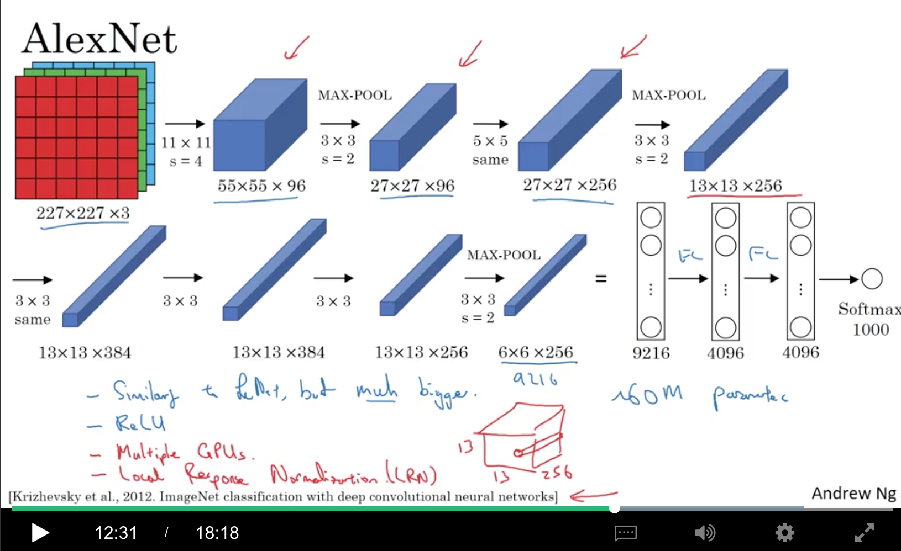
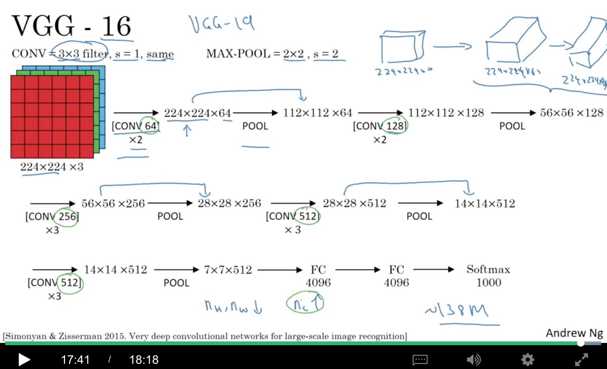
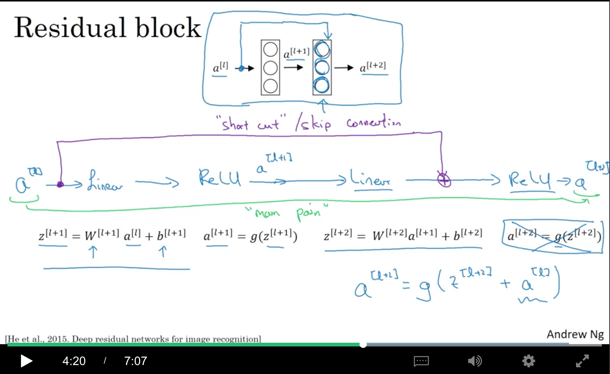

<!DOCTYPE html>
  <html>
    <head>
      <title>c4w2</title>
      <meta charset="utf-8">
      <meta name="viewport" content="width=device-width, initial-scale=1.0">
      
      <link rel="stylesheet" href="https://cdnjs.cloudflare.com/ajax/libs/KaTeX/0.9.0/katex.min.css">
      
      
      
      
      
      
      
      
      
      

      <style> 
      /**
 * prism.js Github theme based on GitHub's theme.
 * @author Sam Clarke
 */
code[class*="language-"],
pre[class*="language-"] {
  color: #333;
  background: none;
  font-family: Consolas, "Liberation Mono", Menlo, Courier, monospace;
  text-align: left;
  white-space: pre;
  word-spacing: normal;
  word-break: normal;
  word-wrap: normal;
  line-height: 1.4;

  -moz-tab-size: 8;
  -o-tab-size: 8;
  tab-size: 8;

  -webkit-hyphens: none;
  -moz-hyphens: none;
  -ms-hyphens: none;
  hyphens: none;
}

/* Code blocks */
pre[class*="language-"] {
  padding: .8em;
  overflow: auto;
  /* border: 1px solid #ddd; */
  border-radius: 3px;
  /* background: #fff; */
  background: #f5f5f5;
}

/* Inline code */
:not(pre) > code[class*="language-"] {
  padding: .1em;
  border-radius: .3em;
  white-space: normal;
  background: #f5f5f5;
}

.token.comment,
.token.blockquote {
  color: #969896;
}

.token.cdata {
  color: #183691;
}

.token.doctype,
.token.punctuation,
.token.variable,
.token.macro.property {
  color: #333;
}

.token.operator,
.token.important,
.token.keyword,
.token.rule,
.token.builtin {
  color: #a71d5d;
}

.token.string,
.token.url,
.token.regex,
.token.attr-value {
  color: #183691;
}

.token.property,
.token.number,
.token.boolean,
.token.entity,
.token.atrule,
.token.constant,
.token.symbol,
.token.command,
.token.code {
  color: #0086b3;
}

.token.tag,
.token.selector,
.token.prolog {
  color: #63a35c;
}

.token.function,
.token.namespace,
.token.pseudo-element,
.token.class,
.token.class-name,
.token.pseudo-class,
.token.id,
.token.url-reference .token.variable,
.token.attr-name {
  color: #795da3;
}

.token.entity {
  cursor: help;
}

.token.title,
.token.title .token.punctuation {
  font-weight: bold;
  color: #1d3e81;
}

.token.list {
  color: #ed6a43;
}

.token.inserted {
  background-color: #eaffea;
  color: #55a532;
}

.token.deleted {
  background-color: #ffecec;
  color: #bd2c00;
}

.token.bold {
  font-weight: bold;
}

.token.italic {
  font-style: italic;
}


/* JSON */
.language-json .token.property {
  color: #183691;
}

.language-markup .token.tag .token.punctuation {
  color: #333;
}

/* CSS */
code.language-css,
.language-css .token.function {
  color: #0086b3;
}

/* YAML */
.language-yaml .token.atrule {
  color: #63a35c;
}

code.language-yaml {
  color: #183691;
}

/* Ruby */
.language-ruby .token.function {
  color: #333;
}

/* Markdown */
.language-markdown .token.url {
  color: #795da3;
}

/* Makefile */
.language-makefile .token.symbol {
  color: #795da3;
}

.language-makefile .token.variable {
  color: #183691;
}

.language-makefile .token.builtin {
  color: #0086b3;
}

/* Bash */
.language-bash .token.keyword {
  color: #0086b3;
}html body{font-family:"Helvetica Neue",Helvetica,"Segoe UI",Arial,freesans,sans-serif;font-size:16px;line-height:1.6;color:#333;background-color:#fff;overflow:initial;box-sizing:border-box;word-wrap:break-word}html body>:first-child{margin-top:0}html body h1,html body h2,html body h3,html body h4,html body h5,html body h6{line-height:1.2;margin-top:1em;margin-bottom:16px;color:#000}html body h1{font-size:2.25em;font-weight:300;padding-bottom:.3em}html body h2{font-size:1.75em;font-weight:400;padding-bottom:.3em}html body h3{font-size:1.5em;font-weight:500}html body h4{font-size:1.25em;font-weight:600}html body h5{font-size:1.1em;font-weight:600}html body h6{font-size:1em;font-weight:600}html body h1,html body h2,html body h3,html body h4,html body h5{font-weight:600}html body h5{font-size:1em}html body h6{color:#5c5c5c}html body strong{color:#000}html body del{color:#5c5c5c}html body a:not([href]){color:inherit;text-decoration:none}html body a{color:#08c;text-decoration:none}html body a:hover{color:#00a3f5;text-decoration:none}html body img{max-width:100%}html body>p{margin-top:0;margin-bottom:16px;word-wrap:break-word}html body>ul,html body>ol{margin-bottom:16px}html body ul,html body ol{padding-left:2em}html body ul.no-list,html body ol.no-list{padding:0;list-style-type:none}html body ul ul,html body ul ol,html body ol ol,html body ol ul{margin-top:0;margin-bottom:0}html body li{margin-bottom:0}html body li.task-list-item{list-style:none}html body li>p{margin-top:0;margin-bottom:0}html body .task-list-item-checkbox{margin:0 .2em .25em -1.8em;vertical-align:middle}html body .task-list-item-checkbox:hover{cursor:pointer}html body blockquote{margin:16px 0;font-size:inherit;padding:0 15px;color:#5c5c5c;border-left:4px solid #d6d6d6}html body blockquote>:first-child{margin-top:0}html body blockquote>:last-child{margin-bottom:0}html body hr{height:4px;margin:32px 0;background-color:#d6d6d6;border:0 none}html body table{margin:10px 0 15px 0;border-collapse:collapse;border-spacing:0;display:block;width:100%;overflow:auto;word-break:normal;word-break:keep-all}html body table th{font-weight:bold;color:#000}html body table td,html body table th{border:1px solid #d6d6d6;padding:6px 13px}html body dl{padding:0}html body dl dt{padding:0;margin-top:16px;font-size:1em;font-style:italic;font-weight:bold}html body dl dd{padding:0 16px;margin-bottom:16px}html body code{font-family:Menlo,Monaco,Consolas,'Courier New',monospace;font-size:.85em !important;color:#000;background-color:#f0f0f0;border-radius:3px;padding:.2em 0}html body code::before,html body code::after{letter-spacing:-0.2em;content:"\00a0"}html body pre>code{padding:0;margin:0;font-size:.85em !important;word-break:normal;white-space:pre;background:transparent;border:0}html body .highlight{margin-bottom:16px}html body .highlight pre,html body pre{padding:1em;overflow:auto;font-size:.85em !important;line-height:1.45;border:#d6d6d6;border-radius:3px}html body .highlight pre{margin-bottom:0;word-break:normal}html body pre code,html body pre tt{display:inline;max-width:initial;padding:0;margin:0;overflow:initial;line-height:inherit;word-wrap:normal;background-color:transparent;border:0}html body pre code:before,html body pre tt:before,html body pre code:after,html body pre tt:after{content:normal}html body p,html body blockquote,html body ul,html body ol,html body dl,html body pre{margin-top:0;margin-bottom:16px}html body kbd{color:#000;border:1px solid #d6d6d6;border-bottom:2px solid #c7c7c7;padding:2px 4px;background-color:#f0f0f0;border-radius:3px}@media print{html body{background-color:#fff}html body h1,html body h2,html body h3,html body h4,html body h5,html body h6{color:#000;page-break-after:avoid}html body blockquote{color:#5c5c5c}html body pre{page-break-inside:avoid}html body table{display:table}html body img{display:block;max-width:100%;max-height:100%}html body pre,html body code{word-wrap:break-word;white-space:pre}}.markdown-preview{width:100%;height:100%;box-sizing:border-box}.markdown-preview .pagebreak,.markdown-preview .newpage{page-break-before:always}.markdown-preview pre.line-numbers{position:relative;padding-left:3.8em;counter-reset:linenumber}.markdown-preview pre.line-numbers>code{position:relative}.markdown-preview pre.line-numbers .line-numbers-rows{position:absolute;pointer-events:none;top:1em;font-size:100%;left:0;width:3em;letter-spacing:-1px;border-right:1px solid #999;-webkit-user-select:none;-moz-user-select:none;-ms-user-select:none;user-select:none}.markdown-preview pre.line-numbers .line-numbers-rows>span{pointer-events:none;display:block;counter-increment:linenumber}.markdown-preview pre.line-numbers .line-numbers-rows>span:before{content:counter(linenumber);color:#999;display:block;padding-right:.8em;text-align:right}.markdown-preview .mathjax-exps .MathJax_Display{text-align:center !important}.markdown-preview:not([for="preview"]) .code-chunk .btn-group{display:none}.markdown-preview:not([for="preview"]) .code-chunk .status{display:none}.markdown-preview:not([for="preview"]) .code-chunk .output-div{margin-bottom:16px}.scrollbar-style::-webkit-scrollbar{width:8px}.scrollbar-style::-webkit-scrollbar-track{border-radius:10px;background-color:transparent}.scrollbar-style::-webkit-scrollbar-thumb{border-radius:5px;background-color:rgba(150,150,150,0.66);border:4px solid rgba(150,150,150,0.66);background-clip:content-box}html body[for="html-export"]:not([data-presentation-mode]){position:relative;width:100%;height:100%;top:0;left:0;margin:0;padding:0;overflow:auto}html body[for="html-export"]:not([data-presentation-mode]) .markdown-preview{position:relative;top:0}@media screen and (min-width:914px){html body[for="html-export"]:not([data-presentation-mode]) .markdown-preview{padding:2em calc(50% - 457px)}}@media screen and (max-width:914px){html body[for="html-export"]:not([data-presentation-mode]) .markdown-preview{padding:2em}}@media screen and (max-width:450px){html body[for="html-export"]:not([data-presentation-mode]) .markdown-preview{font-size:14px !important;padding:1em}}@media print{html body[for="html-export"]:not([data-presentation-mode]) #sidebar-toc-btn{display:none}}html body[for="html-export"]:not([data-presentation-mode]) #sidebar-toc-btn{position:fixed;bottom:8px;left:8px;font-size:28px;cursor:pointer;color:inherit;z-index:99;width:32px;text-align:center;opacity:.4}html body[for="html-export"]:not([data-presentation-mode])[html-show-sidebar-toc] #sidebar-toc-btn{opacity:1}html body[for="html-export"]:not([data-presentation-mode])[html-show-sidebar-toc] .md-sidebar-toc{position:fixed;top:0;left:0;width:300px;height:100%;padding:32px 0 48px 0;font-size:14px;box-shadow:0 0 4px rgba(150,150,150,0.33);box-sizing:border-box;overflow:auto;background-color:inherit}html body[for="html-export"]:not([data-presentation-mode])[html-show-sidebar-toc] .md-sidebar-toc::-webkit-scrollbar{width:8px}html body[for="html-export"]:not([data-presentation-mode])[html-show-sidebar-toc] .md-sidebar-toc::-webkit-scrollbar-track{border-radius:10px;background-color:transparent}html body[for="html-export"]:not([data-presentation-mode])[html-show-sidebar-toc] .md-sidebar-toc::-webkit-scrollbar-thumb{border-radius:5px;background-color:rgba(150,150,150,0.66);border:4px solid rgba(150,150,150,0.66);background-clip:content-box}html body[for="html-export"]:not([data-presentation-mode])[html-show-sidebar-toc] .md-sidebar-toc a{text-decoration:none}html body[for="html-export"]:not([data-presentation-mode])[html-show-sidebar-toc] .md-sidebar-toc ul{padding:0 1.6em;margin-top:.8em}html body[for="html-export"]:not([data-presentation-mode])[html-show-sidebar-toc] .md-sidebar-toc li{margin-bottom:.8em}html body[for="html-export"]:not([data-presentation-mode])[html-show-sidebar-toc] .md-sidebar-toc ul{list-style-type:none}html body[for="html-export"]:not([data-presentation-mode])[html-show-sidebar-toc] .markdown-preview{left:300px;width:calc(100% -  300px);padding:2em calc(50% - 457px -  150px);margin:0;box-sizing:border-box}@media screen and (max-width:1274px){html body[for="html-export"]:not([data-presentation-mode])[html-show-sidebar-toc] .markdown-preview{padding:2em}}@media screen and (max-width:450px){html body[for="html-export"]:not([data-presentation-mode])[html-show-sidebar-toc] .markdown-preview{width:100%}}html body[for="html-export"]:not([data-presentation-mode]):not([html-show-sidebar-toc]) .markdown-preview{left:50%;transform:translateX(-50%)}html body[for="html-export"]:not([data-presentation-mode]):not([html-show-sidebar-toc]) .md-sidebar-toc{display:none}
/* Please visit the URL below for more information: */
/*   https://shd101wyy.github.io/markdown-preview-enhanced/#/customize-css */
 
      </style>
    </head>
    <body for="html-export">
      <div class="mume markdown-preview   ">
      <p>contents</p>
<ul>
<li><a href="#1-case-studies">1. Case studies</a>
<ul>
<li><a href="#11-why-look-at-case-studies">1.1 Why look at case studies?</a></li>
<li><a href="#12-classic-networks">1.2 Classic Networks</a>
<ul>
<li><a href="#121-lenet-5%EF%BC%881998%E5%B9%B4%EF%BC%89">1.2.1 LeNet-5（1998年）</a></li>
<li><a href="#122-alexnet%EF%BC%882012%E5%B9%B4%EF%BC%89">1.2.2 AlexNet（2012年）</a></li>
<li><a href="#123-vgg-162015%E5%B9%B4">1.2.3 vgg-16(2015年)</a></li>
</ul>
</li>
<li><a href="#13-resnets">1.3 ResNets</a></li>
<li><a href="#14-why-resnets-work">1.4 Why ResNets Work</a></li>
<li><a href="#15-networks-in-networks-and-1x1-convolutions%EF%BC%882013%E5%B9%B4%EF%BC%89">1.5 Networks in Networks and 1x1 Convolutions（2013年）</a></li>
<li><a href="#16-inception-network-motivation%EF%BC%882014%E5%B9%B4%EF%BC%89">1.6 Inception Network Motivation（2014年）</a></li>
<li><a href="#17-inception-network">1.7 Inception Network</a></li>
</ul>
</li>
<li><a href="#2-practical-advices-for-using-convnets">2. Practical advices for using ConvNets</a>
<ul>
<li><a href="#21-using-open-source-implementation">2.1 Using Open-Source Implementation</a></li>
<li><a href="#22-transfer-learning">2.2 Transfer Learning</a>
<ul>
<li><a href="#221-%E5%A6%82%E6%9E%9C%E8%AE%AD%E7%BB%83%E9%9B%86%E8%BE%83%E5%B0%8F">2.2.1 如果训练集较小</a></li>
<li><a href="#222-%E5%A6%82%E6%9E%9C%E8%AE%AD%E7%BB%83%E9%9B%86%E5%BE%88%E5%A4%A7">2.2.2 如果训练集很大</a></li>
<li><a href="#223-%E5%A6%82%E6%9E%9C%E8%AE%AD%E7%BB%83%E9%9B%86%E7%89%B9%E5%88%AB%E5%A4%A7">2.2.3 如果训练集特别大</a></li>
</ul>
</li>
<li><a href="#23-data-augmentation">2.3 Data Augmentation</a></li>
<li><a href="#24-state-of-computer-vision">2.4 State of Computer Vision</a></li>
</ul>
</li>
</ul>
<h1 class="mume-header" id="1-case-studies">1. Case studies</h1>

<h2 class="mume-header" id="11-why-look-at-case-studies">1.1 Why look at case studies?</h2>

<p>其中，ResNet可以达到152层</p>
<p></p>
<h2 class="mume-header" id="12-classic-networks">1.2 Classic Networks</h2>

<h3 class="mume-header" id="121-lenet-51998%E5%B9%B4">1.2.1 LeNet-5（1998年）</h3>

<ul>
<li>因为输入是灰度图，所以channel=1，维度是<span class="katex-display"><span class="katex"><span class="katex-mathml"><math><semantics><mrow><msubsup><mi>n</mi><mi>H</mi><mrow><mo>[</mo><mn>0</mn><mo>]</mo></mrow></msubsup><mo>×</mo><msubsup><mi>n</mi><mi>W</mi><mrow><mo>[</mo><mn>0</mn><mo>]</mo></mrow></msubsup><mo>×</mo><msubsup><mi>n</mi><mi>C</mi><mrow><mo>[</mo><mn>0</mn><mo>]</mo></mrow></msubsup><mo>=</mo><mn>3</mn><mn>2</mn><mo>×</mo><mn>3</mn><mn>2</mn><mo>×</mo><mn>1</mn></mrow><annotation encoding="application/x-tex">n_H^{[0]}\times n_W^{[0]}\times n_C^{[0]}=32\times 32\times 1</annotation></semantics></math></span><span class="katex-html" aria-hidden="true"><span class="strut" style="height:1.0448em;"></span><span class="strut bottom" style="height:1.338331em;vertical-align:-0.293531em;"></span><span class="base"><span class="mord"><span class="mord mathit">n</span><span class="msupsub"><span class="vlist-t vlist-t2"><span class="vlist-r"><span class="vlist" style="height:1.0448em;"><span style="top:-2.4064690000000004em;margin-left:0em;margin-right:0.05em;"><span class="pstrut" style="height:2.7em;"></span><span class="sizing reset-size6 size3 mtight"><span class="mord mathit mtight" style="margin-right:0.08125em;">H</span></span></span><span style="top:-3.2198em;margin-right:0.05em;"><span class="pstrut" style="height:2.7em;"></span><span class="sizing reset-size6 size3 mtight"><span class="mord mtight"><span class="mopen mtight">[</span><span class="mord mtight">0</span><span class="mclose mtight">]</span></span></span></span></span><span class="vlist-s">​</span></span><span class="vlist-r"><span class="vlist" style="height:0.293531em;"></span></span></span></span></span><span class="mord rule" style="margin-right:0.2222222222222222em;"></span><span class="mbin">×</span><span class="mord rule" style="margin-right:0.2222222222222222em;"></span><span class="mord"><span class="mord mathit">n</span><span class="msupsub"><span class="vlist-t vlist-t2"><span class="vlist-r"><span class="vlist" style="height:1.0448em;"><span style="top:-2.4064690000000004em;margin-left:0em;margin-right:0.05em;"><span class="pstrut" style="height:2.7em;"></span><span class="sizing reset-size6 size3 mtight"><span class="mord mathit mtight" style="margin-right:0.13889em;">W</span></span></span><span style="top:-3.2198em;margin-right:0.05em;"><span class="pstrut" style="height:2.7em;"></span><span class="sizing reset-size6 size3 mtight"><span class="mord mtight"><span class="mopen mtight">[</span><span class="mord mtight">0</span><span class="mclose mtight">]</span></span></span></span></span><span class="vlist-s">​</span></span><span class="vlist-r"><span class="vlist" style="height:0.293531em;"></span></span></span></span></span><span class="mord rule" style="margin-right:0.2222222222222222em;"></span><span class="mbin">×</span><span class="mord rule" style="margin-right:0.2222222222222222em;"></span><span class="mord"><span class="mord mathit">n</span><span class="msupsub"><span class="vlist-t vlist-t2"><span class="vlist-r"><span class="vlist" style="height:1.0448em;"><span style="top:-2.4064690000000004em;margin-left:0em;margin-right:0.05em;"><span class="pstrut" style="height:2.7em;"></span><span class="sizing reset-size6 size3 mtight"><span class="mord mathit mtight" style="margin-right:0.07153em;">C</span></span></span><span style="top:-3.2198em;margin-right:0.05em;"><span class="pstrut" style="height:2.7em;"></span><span class="sizing reset-size6 size3 mtight"><span class="mord mtight"><span class="mopen mtight">[</span><span class="mord mtight">0</span><span class="mclose mtight">]</span></span></span></span></span><span class="vlist-s">​</span></span><span class="vlist-r"><span class="vlist" style="height:0.293531em;"></span></span></span></span></span><span class="mord rule" style="margin-right:0.2777777777777778em;"></span><span class="mrel">=</span><span class="mord rule" style="margin-right:0.2777777777777778em;"></span><span class="mord">3</span><span class="mord">2</span><span class="mord rule" style="margin-right:0.2222222222222222em;"></span><span class="mbin">×</span><span class="mord rule" style="margin-right:0.2222222222222222em;"></span><span class="mord">3</span><span class="mord">2</span><span class="mord rule" style="margin-right:0.2222222222222222em;"></span><span class="mbin">×</span><span class="mord rule" style="margin-right:0.2222222222222222em;"></span><span class="mord">1</span></span></span></span></span></li>
<li>stride=1，有6个filters，每个是5x5，所以输出是，<span class="katex-display"><span class="katex"><span class="katex-mathml"><math><semantics><mrow><msubsup><mi>n</mi><mi>H</mi><mrow><mo>[</mo><mn>1</mn><mo>]</mo></mrow></msubsup><mo>×</mo><msubsup><mi>n</mi><mi>W</mi><mrow><mo>[</mo><mn>1</mn><mo>]</mo></mrow></msubsup><mo>×</mo><msubsup><mi>n</mi><mi>C</mi><mrow><mo>[</mo><mn>1</mn><mo>]</mo></mrow></msubsup><mo>=</mo><mo>(</mo><mfrac><mrow><mo>(</mo><mn>3</mn><mn>2</mn><mo>−</mo><mn>5</mn><mo>+</mo><mn>2</mn><mo>×</mo><mn>0</mn><mo>)</mo></mrow><mrow><mn>1</mn></mrow></mfrac><mo>+</mo><mn>1</mn><mo>)</mo><mo>×</mo><mo>(</mo><mfrac><mrow><mo>(</mo><mn>3</mn><mn>2</mn><mo>−</mo><mn>5</mn><mo>+</mo><mn>2</mn><mo>×</mo><mn>0</mn><mo>)</mo></mrow><mrow><mn>2</mn></mrow></mfrac><mo>+</mo><mn>1</mn><mo>)</mo><mo>×</mo><mn>6</mn><mo>=</mo><mn>2</mn><mn>8</mn><mo>×</mo><mn>2</mn><mn>8</mn><mo>×</mo><mn>6</mn></mrow><annotation encoding="application/x-tex">n_H^{[1]}\times n_W^{[1]}\times n_C^{[1]}=(\frac{(32-5+2\times 0)}{1}+1)\times (\frac{(32-5+2\times 0)}{2}+1)\times 6=28\times 28\times 6</annotation></semantics></math></span><span class="katex-html" aria-hidden="true"><span class="strut" style="height:1.427em;"></span><span class="strut bottom" style="height:2.113em;vertical-align:-0.686em;"></span><span class="base"><span class="mord"><span class="mord mathit">n</span><span class="msupsub"><span class="vlist-t vlist-t2"><span class="vlist-r"><span class="vlist" style="height:1.0448em;"><span style="top:-2.4064690000000004em;margin-left:0em;margin-right:0.05em;"><span class="pstrut" style="height:2.7em;"></span><span class="sizing reset-size6 size3 mtight"><span class="mord mathit mtight" style="margin-right:0.08125em;">H</span></span></span><span style="top:-3.2198em;margin-right:0.05em;"><span class="pstrut" style="height:2.7em;"></span><span class="sizing reset-size6 size3 mtight"><span class="mord mtight"><span class="mopen mtight">[</span><span class="mord mtight">1</span><span class="mclose mtight">]</span></span></span></span></span><span class="vlist-s">​</span></span><span class="vlist-r"><span class="vlist" style="height:0.293531em;"></span></span></span></span></span><span class="mord rule" style="margin-right:0.2222222222222222em;"></span><span class="mbin">×</span><span class="mord rule" style="margin-right:0.2222222222222222em;"></span><span class="mord"><span class="mord mathit">n</span><span class="msupsub"><span class="vlist-t vlist-t2"><span class="vlist-r"><span class="vlist" style="height:1.0448em;"><span style="top:-2.4064690000000004em;margin-left:0em;margin-right:0.05em;"><span class="pstrut" style="height:2.7em;"></span><span class="sizing reset-size6 size3 mtight"><span class="mord mathit mtight" style="margin-right:0.13889em;">W</span></span></span><span style="top:-3.2198em;margin-right:0.05em;"><span class="pstrut" style="height:2.7em;"></span><span class="sizing reset-size6 size3 mtight"><span class="mord mtight"><span class="mopen mtight">[</span><span class="mord mtight">1</span><span class="mclose mtight">]</span></span></span></span></span><span class="vlist-s">​</span></span><span class="vlist-r"><span class="vlist" style="height:0.293531em;"></span></span></span></span></span><span class="mord rule" style="margin-right:0.2222222222222222em;"></span><span class="mbin">×</span><span class="mord rule" style="margin-right:0.2222222222222222em;"></span><span class="mord"><span class="mord mathit">n</span><span class="msupsub"><span class="vlist-t vlist-t2"><span class="vlist-r"><span class="vlist" style="height:1.0448em;"><span style="top:-2.4064690000000004em;margin-left:0em;margin-right:0.05em;"><span class="pstrut" style="height:2.7em;"></span><span class="sizing reset-size6 size3 mtight"><span class="mord mathit mtight" style="margin-right:0.07153em;">C</span></span></span><span style="top:-3.2198em;margin-right:0.05em;"><span class="pstrut" style="height:2.7em;"></span><span class="sizing reset-size6 size3 mtight"><span class="mord mtight"><span class="mopen mtight">[</span><span class="mord mtight">1</span><span class="mclose mtight">]</span></span></span></span></span><span class="vlist-s">​</span></span><span class="vlist-r"><span class="vlist" style="height:0.293531em;"></span></span></span></span></span><span class="mord rule" style="margin-right:0.2777777777777778em;"></span><span class="mrel">=</span><span class="mord rule" style="margin-right:0.2777777777777778em;"></span><span class="mopen">(</span><span class="mord"><span class="mopen nulldelimiter"></span><span class="mfrac"><span class="vlist-t vlist-t2"><span class="vlist-r"><span class="vlist" style="height:1.427em;"><span style="top:-2.314em;"><span class="pstrut" style="height:3em;"></span><span class="mord"><span class="mord">1</span></span></span><span style="top:-3.15em;"><span class="pstrut" style="height:3em;"></span><span class="stretchy" style="height:0.2em;"><svg width="400em" height="0.2em" viewBox="0 0 400000 200" preserveAspectRatio="xMinYMin slice"><path d="M0 80H400000 v40H0z M0 80H400000 v40H0z"></path></svg></span></span><span style="top:-3.677em;"><span class="pstrut" style="height:3em;"></span><span class="mord"><span class="mopen">(</span><span class="mord">3</span><span class="mord">2</span><span class="mord rule" style="margin-right:0.2222222222222222em;"></span><span class="mbin">−</span><span class="mord rule" style="margin-right:0.2222222222222222em;"></span><span class="mord">5</span><span class="mord rule" style="margin-right:0.2222222222222222em;"></span><span class="mbin">+</span><span class="mord rule" style="margin-right:0.2222222222222222em;"></span><span class="mord">2</span><span class="mord rule" style="margin-right:0.2222222222222222em;"></span><span class="mbin">×</span><span class="mord rule" style="margin-right:0.2222222222222222em;"></span><span class="mord">0</span><span class="mclose">)</span></span></span></span><span class="vlist-s">​</span></span><span class="vlist-r"><span class="vlist" style="height:0.686em;"></span></span></span></span><span class="mclose nulldelimiter"></span></span><span class="mord rule" style="margin-right:0.2222222222222222em;"></span><span class="mbin">+</span><span class="mord rule" style="margin-right:0.2222222222222222em;"></span><span class="mord">1</span><span class="mclose">)</span><span class="mord rule" style="margin-right:0.2222222222222222em;"></span><span class="mbin">×</span><span class="mord rule" style="margin-right:0.2222222222222222em;"></span><span class="mopen">(</span><span class="mord"><span class="mopen nulldelimiter"></span><span class="mfrac"><span class="vlist-t vlist-t2"><span class="vlist-r"><span class="vlist" style="height:1.427em;"><span style="top:-2.314em;"><span class="pstrut" style="height:3em;"></span><span class="mord"><span class="mord">2</span></span></span><span style="top:-3.15em;"><span class="pstrut" style="height:3em;"></span><span class="stretchy" style="height:0.2em;"><svg width="400em" height="0.2em" viewBox="0 0 400000 200" preserveAspectRatio="xMinYMin slice"><path d="M0 80H400000 v40H0z M0 80H400000 v40H0z"></path></svg></span></span><span style="top:-3.677em;"><span class="pstrut" style="height:3em;"></span><span class="mord"><span class="mopen">(</span><span class="mord">3</span><span class="mord">2</span><span class="mord rule" style="margin-right:0.2222222222222222em;"></span><span class="mbin">−</span><span class="mord rule" style="margin-right:0.2222222222222222em;"></span><span class="mord">5</span><span class="mord rule" style="margin-right:0.2222222222222222em;"></span><span class="mbin">+</span><span class="mord rule" style="margin-right:0.2222222222222222em;"></span><span class="mord">2</span><span class="mord rule" style="margin-right:0.2222222222222222em;"></span><span class="mbin">×</span><span class="mord rule" style="margin-right:0.2222222222222222em;"></span><span class="mord">0</span><span class="mclose">)</span></span></span></span><span class="vlist-s">​</span></span><span class="vlist-r"><span class="vlist" style="height:0.686em;"></span></span></span></span><span class="mclose nulldelimiter"></span></span><span class="mord rule" style="margin-right:0.2222222222222222em;"></span><span class="mbin">+</span><span class="mord rule" style="margin-right:0.2222222222222222em;"></span><span class="mord">1</span><span class="mclose">)</span><span class="mord rule" style="margin-right:0.2222222222222222em;"></span><span class="mbin">×</span><span class="mord rule" style="margin-right:0.2222222222222222em;"></span><span class="mord">6</span><span class="mord rule" style="margin-right:0.2777777777777778em;"></span><span class="mrel">=</span><span class="mord rule" style="margin-right:0.2777777777777778em;"></span><span class="mord">2</span><span class="mord">8</span><span class="mord rule" style="margin-right:0.2222222222222222em;"></span><span class="mbin">×</span><span class="mord rule" style="margin-right:0.2222222222222222em;"></span><span class="mord">2</span><span class="mord">8</span><span class="mord rule" style="margin-right:0.2222222222222222em;"></span><span class="mbin">×</span><span class="mord rule" style="margin-right:0.2222222222222222em;"></span><span class="mord">6</span></span></span></span></span></li>
<li>接下来接的是avg pooling(当时avg很流行，后来大部分是max pooling了)，2x2的filter，stride=2，而pooling的filter并没有第三维，输入和输出的第三维是一样的。所以输出是，<span class="katex-display"><span class="katex"><span class="katex-mathml"><math><semantics><mrow><mo>(</mo><mfrac><mrow><mo>(</mo><mn>2</mn><mn>8</mn><mo>−</mo><mn>2</mn><mo>+</mo><mn>2</mn><mo>×</mo><mn>0</mn><mo>)</mo></mrow><mrow><mn>2</mn></mrow></mfrac><mo>+</mo><mn>1</mn><mo>)</mo><mo>×</mo><mo>(</mo><mfrac><mrow><mo>(</mo><mn>2</mn><mn>8</mn><mo>−</mo><mn>2</mn><mo>+</mo><mn>2</mn><mo>×</mo><mn>0</mn><mo>)</mo></mrow><mrow><mn>2</mn></mrow></mfrac><mo>+</mo><mn>1</mn><mo>)</mo><mo>×</mo><mn>6</mn><mo>=</mo><mn>1</mn><mn>4</mn><mo>×</mo><mn>1</mn><mn>4</mn><mo>×</mo><mn>6</mn></mrow><annotation encoding="application/x-tex">(\frac{(28-2+2\times 0)}{2}+1)\times (\frac{(28-2+2\times 0)}{2}+1)\times 6=14\times 14\times 6</annotation></semantics></math></span><span class="katex-html" aria-hidden="true"><span class="strut" style="height:1.427em;"></span><span class="strut bottom" style="height:2.113em;vertical-align:-0.686em;"></span><span class="base"><span class="mopen">(</span><span class="mord"><span class="mopen nulldelimiter"></span><span class="mfrac"><span class="vlist-t vlist-t2"><span class="vlist-r"><span class="vlist" style="height:1.427em;"><span style="top:-2.314em;"><span class="pstrut" style="height:3em;"></span><span class="mord"><span class="mord">2</span></span></span><span style="top:-3.15em;"><span class="pstrut" style="height:3em;"></span><span class="stretchy" style="height:0.2em;"><svg width="400em" height="0.2em" viewBox="0 0 400000 200" preserveAspectRatio="xMinYMin slice"><path d="M0 80H400000 v40H0z M0 80H400000 v40H0z"></path></svg></span></span><span style="top:-3.677em;"><span class="pstrut" style="height:3em;"></span><span class="mord"><span class="mopen">(</span><span class="mord">2</span><span class="mord">8</span><span class="mord rule" style="margin-right:0.2222222222222222em;"></span><span class="mbin">−</span><span class="mord rule" style="margin-right:0.2222222222222222em;"></span><span class="mord">2</span><span class="mord rule" style="margin-right:0.2222222222222222em;"></span><span class="mbin">+</span><span class="mord rule" style="margin-right:0.2222222222222222em;"></span><span class="mord">2</span><span class="mord rule" style="margin-right:0.2222222222222222em;"></span><span class="mbin">×</span><span class="mord rule" style="margin-right:0.2222222222222222em;"></span><span class="mord">0</span><span class="mclose">)</span></span></span></span><span class="vlist-s">​</span></span><span class="vlist-r"><span class="vlist" style="height:0.686em;"></span></span></span></span><span class="mclose nulldelimiter"></span></span><span class="mord rule" style="margin-right:0.2222222222222222em;"></span><span class="mbin">+</span><span class="mord rule" style="margin-right:0.2222222222222222em;"></span><span class="mord">1</span><span class="mclose">)</span><span class="mord rule" style="margin-right:0.2222222222222222em;"></span><span class="mbin">×</span><span class="mord rule" style="margin-right:0.2222222222222222em;"></span><span class="mopen">(</span><span class="mord"><span class="mopen nulldelimiter"></span><span class="mfrac"><span class="vlist-t vlist-t2"><span class="vlist-r"><span class="vlist" style="height:1.427em;"><span style="top:-2.314em;"><span class="pstrut" style="height:3em;"></span><span class="mord"><span class="mord">2</span></span></span><span style="top:-3.15em;"><span class="pstrut" style="height:3em;"></span><span class="stretchy" style="height:0.2em;"><svg width="400em" height="0.2em" viewBox="0 0 400000 200" preserveAspectRatio="xMinYMin slice"><path d="M0 80H400000 v40H0z M0 80H400000 v40H0z"></path></svg></span></span><span style="top:-3.677em;"><span class="pstrut" style="height:3em;"></span><span class="mord"><span class="mopen">(</span><span class="mord">2</span><span class="mord">8</span><span class="mord rule" style="margin-right:0.2222222222222222em;"></span><span class="mbin">−</span><span class="mord rule" style="margin-right:0.2222222222222222em;"></span><span class="mord">2</span><span class="mord rule" style="margin-right:0.2222222222222222em;"></span><span class="mbin">+</span><span class="mord rule" style="margin-right:0.2222222222222222em;"></span><span class="mord">2</span><span class="mord rule" style="margin-right:0.2222222222222222em;"></span><span class="mbin">×</span><span class="mord rule" style="margin-right:0.2222222222222222em;"></span><span class="mord">0</span><span class="mclose">)</span></span></span></span><span class="vlist-s">​</span></span><span class="vlist-r"><span class="vlist" style="height:0.686em;"></span></span></span></span><span class="mclose nulldelimiter"></span></span><span class="mord rule" style="margin-right:0.2222222222222222em;"></span><span class="mbin">+</span><span class="mord rule" style="margin-right:0.2222222222222222em;"></span><span class="mord">1</span><span class="mclose">)</span><span class="mord rule" style="margin-right:0.2222222222222222em;"></span><span class="mbin">×</span><span class="mord rule" style="margin-right:0.2222222222222222em;"></span><span class="mord">6</span><span class="mord rule" style="margin-right:0.2777777777777778em;"></span><span class="mrel">=</span><span class="mord rule" style="margin-right:0.2777777777777778em;"></span><span class="mord">1</span><span class="mord">4</span><span class="mord rule" style="margin-right:0.2222222222222222em;"></span><span class="mbin">×</span><span class="mord rule" style="margin-right:0.2222222222222222em;"></span><span class="mord">1</span><span class="mord">4</span><span class="mord rule" style="margin-right:0.2222222222222222em;"></span><span class="mbin">×</span><span class="mord rule" style="margin-right:0.2222222222222222em;"></span><span class="mord">6</span></span></span></span></span></li>
<li>接下来接16个5x5(应该是5x5x6，maybe是同一个5x5，给6个channel用，所以简记为5x5)的filter，stride=1，所以：<br>
<span class="katex-display"><span class="katex"><span class="katex-mathml"><math><semantics><mrow><mo>(</mo><mfrac><mrow><mn>1</mn><mn>4</mn><mo>−</mo><mn>5</mn><mo>+</mo><mn>2</mn><mo>×</mo><mn>0</mn></mrow><mrow><mn>1</mn></mrow></mfrac><mo>+</mo><mn>1</mn><mo>)</mo><mo>(</mo><mfrac><mrow><mn>1</mn><mn>4</mn><mo>−</mo><mn>5</mn><mo>×</mo><mn>0</mn></mrow><mrow><mn>1</mn></mrow></mfrac><mo>+</mo><mn>1</mn><mo>)</mo><mo>×</mo><mn>1</mn><mn>6</mn><mo>=</mo><mn>1</mn><mn>0</mn><mo>×</mo><mn>1</mn><mn>0</mn><mo>×</mo><mn>1</mn><mn>6</mn></mrow><annotation encoding="application/x-tex">(\frac{14-5+2\times 0}{1}+1)(\frac{14-5\times 0}{1}+1)\times 16=10\times 10\times 16</annotation></semantics></math></span><span class="katex-html" aria-hidden="true"><span class="strut" style="height:1.32144em;"></span><span class="strut bottom" style="height:2.00744em;vertical-align:-0.686em;"></span><span class="base"><span class="mopen">(</span><span class="mord"><span class="mopen nulldelimiter"></span><span class="mfrac"><span class="vlist-t vlist-t2"><span class="vlist-r"><span class="vlist" style="height:1.32144em;"><span style="top:-2.314em;"><span class="pstrut" style="height:3em;"></span><span class="mord"><span class="mord">1</span></span></span><span style="top:-3.15em;"><span class="pstrut" style="height:3em;"></span><span class="stretchy" style="height:0.2em;"><svg width="400em" height="0.2em" viewBox="0 0 400000 200" preserveAspectRatio="xMinYMin slice"><path d="M0 80H400000 v40H0z M0 80H400000 v40H0z"></path></svg></span></span><span style="top:-3.677em;"><span class="pstrut" style="height:3em;"></span><span class="mord"><span class="mord">1</span><span class="mord">4</span><span class="mord rule" style="margin-right:0.2222222222222222em;"></span><span class="mbin">−</span><span class="mord rule" style="margin-right:0.2222222222222222em;"></span><span class="mord">5</span><span class="mord rule" style="margin-right:0.2222222222222222em;"></span><span class="mbin">+</span><span class="mord rule" style="margin-right:0.2222222222222222em;"></span><span class="mord">2</span><span class="mord rule" style="margin-right:0.2222222222222222em;"></span><span class="mbin">×</span><span class="mord rule" style="margin-right:0.2222222222222222em;"></span><span class="mord">0</span></span></span></span><span class="vlist-s">​</span></span><span class="vlist-r"><span class="vlist" style="height:0.686em;"></span></span></span></span><span class="mclose nulldelimiter"></span></span><span class="mord rule" style="margin-right:0.2222222222222222em;"></span><span class="mbin">+</span><span class="mord rule" style="margin-right:0.2222222222222222em;"></span><span class="mord">1</span><span class="mclose">)</span><span class="mopen">(</span><span class="mord"><span class="mopen nulldelimiter"></span><span class="mfrac"><span class="vlist-t vlist-t2"><span class="vlist-r"><span class="vlist" style="height:1.32144em;"><span style="top:-2.314em;"><span class="pstrut" style="height:3em;"></span><span class="mord"><span class="mord">1</span></span></span><span style="top:-3.15em;"><span class="pstrut" style="height:3em;"></span><span class="stretchy" style="height:0.2em;"><svg width="400em" height="0.2em" viewBox="0 0 400000 200" preserveAspectRatio="xMinYMin slice"><path d="M0 80H400000 v40H0z M0 80H400000 v40H0z"></path></svg></span></span><span style="top:-3.677em;"><span class="pstrut" style="height:3em;"></span><span class="mord"><span class="mord">1</span><span class="mord">4</span><span class="mord rule" style="margin-right:0.2222222222222222em;"></span><span class="mbin">−</span><span class="mord rule" style="margin-right:0.2222222222222222em;"></span><span class="mord">5</span><span class="mord rule" style="margin-right:0.2222222222222222em;"></span><span class="mbin">×</span><span class="mord rule" style="margin-right:0.2222222222222222em;"></span><span class="mord">0</span></span></span></span><span class="vlist-s">​</span></span><span class="vlist-r"><span class="vlist" style="height:0.686em;"></span></span></span></span><span class="mclose nulldelimiter"></span></span><span class="mord rule" style="margin-right:0.2222222222222222em;"></span><span class="mbin">+</span><span class="mord rule" style="margin-right:0.2222222222222222em;"></span><span class="mord">1</span><span class="mclose">)</span><span class="mord rule" style="margin-right:0.2222222222222222em;"></span><span class="mbin">×</span><span class="mord rule" style="margin-right:0.2222222222222222em;"></span><span class="mord">1</span><span class="mord">6</span><span class="mord rule" style="margin-right:0.2777777777777778em;"></span><span class="mrel">=</span><span class="mord rule" style="margin-right:0.2777777777777778em;"></span><span class="mord">1</span><span class="mord">0</span><span class="mord rule" style="margin-right:0.2222222222222222em;"></span><span class="mbin">×</span><span class="mord rule" style="margin-right:0.2222222222222222em;"></span><span class="mord">1</span><span class="mord">0</span><span class="mord rule" style="margin-right:0.2222222222222222em;"></span><span class="mbin">×</span><span class="mord rule" style="margin-right:0.2222222222222222em;"></span><span class="mord">1</span><span class="mord">6</span></span></span></span></span></li>
<li>然后接一个avg pooling，2x2的，输出是<br>
<span class="katex-display"><span class="katex"><span class="katex-mathml"><math><semantics><mrow><mo>(</mo><mfrac><mrow><mn>1</mn><mn>0</mn><mo>−</mo><mn>2</mn><mo>+</mo><mn>2</mn><mo>×</mo><mn>0</mn></mrow><mrow><mn>2</mn></mrow></mfrac><mo>+</mo><mn>1</mn><mo>)</mo><mo>(</mo><mfrac><mrow><mn>1</mn><mn>0</mn><mo>−</mo><mn>2</mn><mo>+</mo><mn>2</mn><mo>×</mo><mn>0</mn></mrow><mrow><mn>2</mn></mrow></mfrac><mo>+</mo><mn>1</mn><mo>)</mo><mo>×</mo><mn>1</mn><mn>6</mn><mo>=</mo><mn>5</mn><mo>×</mo><mn>5</mn><mo>×</mo><mn>1</mn><mn>6</mn></mrow><annotation encoding="application/x-tex">(\frac{10-2+2\times 0}{2}+1)(\frac{10-2+2\times 0}{2}+1)\times 16=5\times5\times 16</annotation></semantics></math></span><span class="katex-html" aria-hidden="true"><span class="strut" style="height:1.32144em;"></span><span class="strut bottom" style="height:2.00744em;vertical-align:-0.686em;"></span><span class="base"><span class="mopen">(</span><span class="mord"><span class="mopen nulldelimiter"></span><span class="mfrac"><span class="vlist-t vlist-t2"><span class="vlist-r"><span class="vlist" style="height:1.32144em;"><span style="top:-2.314em;"><span class="pstrut" style="height:3em;"></span><span class="mord"><span class="mord">2</span></span></span><span style="top:-3.15em;"><span class="pstrut" style="height:3em;"></span><span class="stretchy" style="height:0.2em;"><svg width="400em" height="0.2em" viewBox="0 0 400000 200" preserveAspectRatio="xMinYMin slice"><path d="M0 80H400000 v40H0z M0 80H400000 v40H0z"></path></svg></span></span><span style="top:-3.677em;"><span class="pstrut" style="height:3em;"></span><span class="mord"><span class="mord">1</span><span class="mord">0</span><span class="mord rule" style="margin-right:0.2222222222222222em;"></span><span class="mbin">−</span><span class="mord rule" style="margin-right:0.2222222222222222em;"></span><span class="mord">2</span><span class="mord rule" style="margin-right:0.2222222222222222em;"></span><span class="mbin">+</span><span class="mord rule" style="margin-right:0.2222222222222222em;"></span><span class="mord">2</span><span class="mord rule" style="margin-right:0.2222222222222222em;"></span><span class="mbin">×</span><span class="mord rule" style="margin-right:0.2222222222222222em;"></span><span class="mord">0</span></span></span></span><span class="vlist-s">​</span></span><span class="vlist-r"><span class="vlist" style="height:0.686em;"></span></span></span></span><span class="mclose nulldelimiter"></span></span><span class="mord rule" style="margin-right:0.2222222222222222em;"></span><span class="mbin">+</span><span class="mord rule" style="margin-right:0.2222222222222222em;"></span><span class="mord">1</span><span class="mclose">)</span><span class="mopen">(</span><span class="mord"><span class="mopen nulldelimiter"></span><span class="mfrac"><span class="vlist-t vlist-t2"><span class="vlist-r"><span class="vlist" style="height:1.32144em;"><span style="top:-2.314em;"><span class="pstrut" style="height:3em;"></span><span class="mord"><span class="mord">2</span></span></span><span style="top:-3.15em;"><span class="pstrut" style="height:3em;"></span><span class="stretchy" style="height:0.2em;"><svg width="400em" height="0.2em" viewBox="0 0 400000 200" preserveAspectRatio="xMinYMin slice"><path d="M0 80H400000 v40H0z M0 80H400000 v40H0z"></path></svg></span></span><span style="top:-3.677em;"><span class="pstrut" style="height:3em;"></span><span class="mord"><span class="mord">1</span><span class="mord">0</span><span class="mord rule" style="margin-right:0.2222222222222222em;"></span><span class="mbin">−</span><span class="mord rule" style="margin-right:0.2222222222222222em;"></span><span class="mord">2</span><span class="mord rule" style="margin-right:0.2222222222222222em;"></span><span class="mbin">+</span><span class="mord rule" style="margin-right:0.2222222222222222em;"></span><span class="mord">2</span><span class="mord rule" style="margin-right:0.2222222222222222em;"></span><span class="mbin">×</span><span class="mord rule" style="margin-right:0.2222222222222222em;"></span><span class="mord">0</span></span></span></span><span class="vlist-s">​</span></span><span class="vlist-r"><span class="vlist" style="height:0.686em;"></span></span></span></span><span class="mclose nulldelimiter"></span></span><span class="mord rule" style="margin-right:0.2222222222222222em;"></span><span class="mbin">+</span><span class="mord rule" style="margin-right:0.2222222222222222em;"></span><span class="mord">1</span><span class="mclose">)</span><span class="mord rule" style="margin-right:0.2222222222222222em;"></span><span class="mbin">×</span><span class="mord rule" style="margin-right:0.2222222222222222em;"></span><span class="mord">1</span><span class="mord">6</span><span class="mord rule" style="margin-right:0.2777777777777778em;"></span><span class="mrel">=</span><span class="mord rule" style="margin-right:0.2777777777777778em;"></span><span class="mord">5</span><span class="mord rule" style="margin-right:0.2222222222222222em;"></span><span class="mbin">×</span><span class="mord rule" style="margin-right:0.2222222222222222em;"></span><span class="mord">5</span><span class="mord rule" style="margin-right:0.2222222222222222em;"></span><span class="mbin">×</span><span class="mord rule" style="margin-right:0.2222222222222222em;"></span><span class="mord">1</span><span class="mord">6</span></span></span></span></span></li>
<li>然后把这5x5x16=400个神经元flatten，变成一个400维的向量，再接一个120维的fc，再接一个84维的fc。</li>
<li>目标是一个10分类的结果，现代的方法是用一个10维的softmax，而在当时，用的是gaussian connections，现在已经不用啦。</li>
</ul>
<p>小结：</p>
<ul>
<li>lenet-5总共有大约60k的参数。</li>
<li>因为都没有用padding，所以随着层数的增加，height和width都会变小。</li>
<li>channels是增加的。</li>
<li>形成了pattern：conv+pool+conv+pool+fc+fc+output</li>
</ul>
<p>看这篇论文时可以关注的点</p>
<ul>
<li>当时的激活函数还是sigmoid/tanh</li>
<li>由于当时的计算速度比较慢，对<span class="katex"><span class="katex-mathml"><math><semantics><mrow><msub><mi>n</mi><mi>H</mi></msub><mo>×</mo><msub><mi>n</mi><mi>W</mi></msub><mo>×</mo><msub><mi>n</mi><mi>C</mi></msub></mrow><annotation encoding="application/x-tex">n_H\times n_W\times n_C</annotation></semantics></math></span><span class="katex-html" aria-hidden="true"><span class="strut" style="height:0.58333em;"></span><span class="strut bottom" style="height:0.73333em;vertical-align:-0.15em;"></span><span class="base"><span class="mord"><span class="mord mathit">n</span><span class="msupsub"><span class="vlist-t vlist-t2"><span class="vlist-r"><span class="vlist" style="height:0.32833099999999993em;"><span style="top:-2.5500000000000003em;margin-left:0em;margin-right:0.05em;"><span class="pstrut" style="height:2.7em;"></span><span class="sizing reset-size6 size3 mtight"><span class="mord mathit mtight" style="margin-right:0.08125em;">H</span></span></span></span><span class="vlist-s">​</span></span><span class="vlist-r"><span class="vlist" style="height:0.15em;"></span></span></span></span></span><span class="mord rule" style="margin-right:0.2222222222222222em;"></span><span class="mbin">×</span><span class="mord rule" style="margin-right:0.2222222222222222em;"></span><span class="mord"><span class="mord mathit">n</span><span class="msupsub"><span class="vlist-t vlist-t2"><span class="vlist-r"><span class="vlist" style="height:0.32833099999999993em;"><span style="top:-2.5500000000000003em;margin-left:0em;margin-right:0.05em;"><span class="pstrut" style="height:2.7em;"></span><span class="sizing reset-size6 size3 mtight"><span class="mord mathit mtight" style="margin-right:0.13889em;">W</span></span></span></span><span class="vlist-s">​</span></span><span class="vlist-r"><span class="vlist" style="height:0.15em;"></span></span></span></span></span><span class="mord rule" style="margin-right:0.2222222222222222em;"></span><span class="mbin">×</span><span class="mord rule" style="margin-right:0.2222222222222222em;"></span><span class="mord"><span class="mord mathit">n</span><span class="msupsub"><span class="vlist-t vlist-t2"><span class="vlist-r"><span class="vlist" style="height:0.32833099999999993em;"><span style="top:-2.5500000000000003em;margin-left:0em;margin-right:0.05em;"><span class="pstrut" style="height:2.7em;"></span><span class="sizing reset-size6 size3 mtight"><span class="mord mathit mtight" style="margin-right:0.07153em;">C</span></span></span></span><span class="vlist-s">​</span></span><span class="vlist-r"><span class="vlist" style="height:0.15em;"></span></span></span></span></span></span></span></span>的输入，使用<span class="katex"><span class="katex-mathml"><math><semantics><mrow><mi>f</mi><mo>×</mo><mi>f</mi><mo>×</mo><msub><mi>n</mi><mi>C</mi></msub></mrow><annotation encoding="application/x-tex">f\times f\times n_C</annotation></semantics></math></span><span class="katex-html" aria-hidden="true"><span class="strut" style="height:0.69444em;"></span><span class="strut bottom" style="height:0.8888799999999999em;vertical-align:-0.19444em;"></span><span class="base"><span class="mord mathit" style="margin-right:0.10764em;">f</span><span class="mord rule" style="margin-right:0.2222222222222222em;"></span><span class="mbin">×</span><span class="mord rule" style="margin-right:0.2222222222222222em;"></span><span class="mord mathit" style="margin-right:0.10764em;">f</span><span class="mord rule" style="margin-right:0.2222222222222222em;"></span><span class="mbin">×</span><span class="mord rule" style="margin-right:0.2222222222222222em;"></span><span class="mord"><span class="mord mathit">n</span><span class="msupsub"><span class="vlist-t vlist-t2"><span class="vlist-r"><span class="vlist" style="height:0.32833099999999993em;"><span style="top:-2.5500000000000003em;margin-left:0em;margin-right:0.05em;"><span class="pstrut" style="height:2.7em;"></span><span class="sizing reset-size6 size3 mtight"><span class="mord mathit mtight" style="margin-right:0.07153em;">C</span></span></span></span><span class="vlist-s">​</span></span><span class="vlist-r"><span class="vlist" style="height:0.15em;"></span></span></span></span></span></span></span></span>的filter，每个filter只对对应的通道起作用</li>
<li>当时在pooling后会接非线性</li>
</ul>
<p>可以关注论文的section II(网络结构)和section III（实验和结论）。</p>
<p></p>
<h3 class="mume-header" id="122-alexnet2012%E5%B9%B4">1.2.2 AlexNet（2012年）</h3>

<ul>
<li>输入是227x227x3的图片</li>
<li>第一层是96个11x11的filters，stride=4，所以得到55x55x96</li>
<li>然后接一个3x3的max pooling，stride=2，所以得到27x27x96</li>
<li>然后经过256个5x5的卷积，做一个same conv，使得得到的宽和高保持不变[即(25+2p-5)/s+1=25==&gt;(20+2p)/s=24，可以设置stride=1，padding=2]，得到27x27x256。</li>
<li>然后再做一个3x3，stride=2的max pooling，得到13x13x256。</li>
<li>再接384个3x3的卷积，做same conv，得到13x13x384</li>
<li>再接384个3x3的卷积，做same conv，同样得到13x13x384</li>
<li>再接256个3x3的卷积，做same conv，同样得到13x13x256</li>
<li>再接3x3，stride=2的max pooling，得到6x6x256</li>
<li>然后flatten成一个6x6x256=9216维的向量</li>
<li>再接两个4096维的fc</li>
<li>最后接一个1000分类的softmax</li>
</ul>
<p>小结：</p>
<ul>
<li>结构和lenet-5相似，但参数上，lenet-5只有60k即6w的参数，而alexnet有60m即6kw的参数</li>
<li>使用了relu</li>
</ul>
<p>看这篇论文时可以关注的点：</p>
<ul>
<li>当时的gpu比较慢，所以当时用很复杂的方式在2个gpu上进行训练。大概的思想就是把一些layer拆开到不同gpu上进行训练和通信。</li>
<li>使用了一些特殊的层，例如local response normalization(LRN)。大概思想是，例如针对一个13x13x256的block，看13x13中的某一个点时，对这个点在256个通道上的值进行normalization。动机在于，在13x13上的某一个位置，或许不需要太多的神经元有太高的激活值。但后来，大多数研究者发现这么做其实没什么用…</li>
</ul>
<p></p>
<h3 class="mume-header" id="123-vgg-162015%E5%B9%B4">1.2.3 vgg-16(2015年)</h3>

<p>CONV都是3x3的filter，stride=1，same padding<br>
MAX-POOL都是2x2，stride=2(刚好可以把宽度和高度缩小一半：(x-2)/2+1=x/2)</p>
<ul>
<li>输入是224x224x3的图片</li>
<li>然后接两个CONV 64层（每层有64个filter）[右上角的图]，得到224x224x64</li>
<li>然后接一个POOL，得到112x112x64</li>
<li>再接两个CONV 128层，得到112x112x128</li>
<li>再接一个POOL，得到56x56x128</li>
<li>再接3个CONV 256，得到56x56x256</li>
<li>再接一个POOL，得到28x28x256</li>
<li>再接3个CONV 512，得到28x28x512</li>
<li>再接一个POOL，得到14x14x512</li>
<li>再接3个CONV 512，得到14x14x512</li>
<li>再接一个POOL，得到7x7x512</li>
<li>然后flatten，并接2个4096的FC，最后接1000的softmax</li>
</ul>
<p>小结：</p>
<ul>
<li>不把POOL当做layer，就总共有2+2+3+3+3+1+1+1，所以叫vgg-16</li>
<li>可以看到，POOL会把高度和宽度减半，而channels则是逐层翻倍(64-238-256-512)</li>
<li>缺点就是参数太多，参数总量有138M，即13.8kw，即1.38亿</li>
<li>还有vgg-19，但效果其实差不多，所以大部分人还是用vgg-16</li>
</ul>
<p></p>
<h2 class="mume-header" id="13-resnets">1.3 ResNets</h2>

<p>核心思想是skip connections/shortcut。</p>
<p>基本组成单元是Residual Block。所谓的Residual，就是把图中的<span class="katex"><span class="katex-mathml"><math><semantics><mrow><msup><mi>a</mi><mrow><mo>[</mo><mi>l</mi><mo>]</mo></mrow></msup></mrow><annotation encoding="application/x-tex">a^{[l]}</annotation></semantics></math></span><span class="katex-html" aria-hidden="true"><span class="strut" style="height:0.8879999999999999em;"></span><span class="strut bottom" style="height:0.8879999999999999em;vertical-align:0em;"></span><span class="base"><span class="mord"><span class="mord mathit">a</span><span class="msupsub"><span class="vlist-t"><span class="vlist-r"><span class="vlist" style="height:0.8879999999999999em;"><span style="top:-3.063em;margin-right:0.05em;"><span class="pstrut" style="height:2.7em;"></span><span class="sizing reset-size6 size3 mtight"><span class="mord mtight"><span class="mopen mtight">[</span><span class="mord mathit mtight" style="margin-right:0.01968em;">l</span><span class="mclose mtight">]</span></span></span></span></span></span></span></span></span></span></span></span>直接『加』到<span class="katex"><span class="katex-mathml"><math><semantics><mrow><msup><mi>z</mi><mrow><mo>[</mo><mi>l</mi><mo>+</mo><mn>2</mn><mo>]</mo></mrow></msup></mrow><annotation encoding="application/x-tex">z^{[l+2]}</annotation></semantics></math></span><span class="katex-html" aria-hidden="true"><span class="strut" style="height:0.8879999999999999em;"></span><span class="strut bottom" style="height:0.8879999999999999em;vertical-align:0em;"></span><span class="base"><span class="mord"><span class="mord mathit" style="margin-right:0.04398em;">z</span><span class="msupsub"><span class="vlist-t"><span class="vlist-r"><span class="vlist" style="height:0.8879999999999999em;"><span style="top:-3.063em;margin-right:0.05em;"><span class="pstrut" style="height:2.7em;"></span><span class="sizing reset-size6 size3 mtight"><span class="mord mtight"><span class="mopen mtight">[</span><span class="mord mathit mtight" style="margin-right:0.01968em;">l</span><span class="mbin mtight">+</span><span class="mord mtight">2</span><span class="mclose mtight">]</span></span></span></span></span></span></span></span></span></span></span></span>上，即：<br>
<span class="katex-display"><span class="katex"><span class="katex-mathml"><math><semantics><mrow><msup><mi>a</mi><mrow><mo>[</mo><mi>l</mi><mo>+</mo><mn>2</mn><mo>]</mo></mrow></msup><mo>=</mo><mi>g</mi><mo>(</mo><msup><mi>z</mi><mrow><mo>[</mo><mi>l</mi><mo>+</mo><mn>2</mn><mo>]</mo></mrow></msup><mo>+</mo><msup><mi>a</mi><mrow><mo>[</mo><mi>l</mi><mo>]</mo></mrow></msup><mo>)</mo></mrow><annotation encoding="application/x-tex">a^{[l+2]}=g(z^{[l+2]}+a^{[l]})</annotation></semantics></math></span><span class="katex-html" aria-hidden="true"><span class="strut" style="height:0.938em;"></span><span class="strut bottom" style="height:1.188em;vertical-align:-0.25em;"></span><span class="base"><span class="mord"><span class="mord mathit">a</span><span class="msupsub"><span class="vlist-t"><span class="vlist-r"><span class="vlist" style="height:0.938em;"><span style="top:-3.113em;margin-right:0.05em;"><span class="pstrut" style="height:2.7em;"></span><span class="sizing reset-size6 size3 mtight"><span class="mord mtight"><span class="mopen mtight">[</span><span class="mord mathit mtight" style="margin-right:0.01968em;">l</span><span class="mbin mtight">+</span><span class="mord mtight">2</span><span class="mclose mtight">]</span></span></span></span></span></span></span></span></span><span class="mord rule" style="margin-right:0.2777777777777778em;"></span><span class="mrel">=</span><span class="mord rule" style="margin-right:0.2777777777777778em;"></span><span class="mord mathit" style="margin-right:0.03588em;">g</span><span class="mopen">(</span><span class="mord"><span class="mord mathit" style="margin-right:0.04398em;">z</span><span class="msupsub"><span class="vlist-t"><span class="vlist-r"><span class="vlist" style="height:0.938em;"><span style="top:-3.113em;margin-right:0.05em;"><span class="pstrut" style="height:2.7em;"></span><span class="sizing reset-size6 size3 mtight"><span class="mord mtight"><span class="mopen mtight">[</span><span class="mord mathit mtight" style="margin-right:0.01968em;">l</span><span class="mbin mtight">+</span><span class="mord mtight">2</span><span class="mclose mtight">]</span></span></span></span></span></span></span></span></span><span class="mord rule" style="margin-right:0.2222222222222222em;"></span><span class="mbin">+</span><span class="mord rule" style="margin-right:0.2222222222222222em;"></span><span class="mord"><span class="mord mathit">a</span><span class="msupsub"><span class="vlist-t"><span class="vlist-r"><span class="vlist" style="height:0.938em;"><span style="top:-3.113em;margin-right:0.05em;"><span class="pstrut" style="height:2.7em;"></span><span class="sizing reset-size6 size3 mtight"><span class="mord mtight"><span class="mopen mtight">[</span><span class="mord mathit mtight" style="margin-right:0.01968em;">l</span><span class="mclose mtight">]</span></span></span></span></span></span></span></span></span><span class="mclose">)</span></span></span></span></span></p>
<p>当然，这种shortcut不仅可以跨越一层，还可以跨越好几层</p>
<p></p>
<p>如下图，有5个residual blocks。</p>
<p>理论上，层数加深，training error会一直变小，如左图中的绿线，但实际应用中，一个很深的普通dnn（没有残差连接），训练误差反而会变大。而ResNet能让更深的网络训练效果更好，可能后面会出现平原（怎么加深效果也不会怎么变化）。</p>
<p></p>
<h2 class="mume-header" id="14-why-resnets-work">1.4 Why ResNets Work</h2>

<p><span class="katex-display"><span class="katex"><span class="katex-mathml"><math><semantics><mrow><msup><mi>a</mi><mrow><mo>[</mo><mi>l</mi><mo>+</mo><mn>2</mn><mo>]</mo></mrow></msup><mo>=</mo><mi>g</mi><mo>(</mo><msup><mi>z</mi><mrow><mo>[</mo><mi>l</mi><mo>+</mo><mn>2</mn><mo>]</mo></mrow></msup><mo>+</mo><msup><mi>a</mi><mrow><mo>[</mo><mi>l</mi><mo>]</mo></mrow></msup><mo>)</mo><mo>=</mo><mi>g</mi><mo>(</mo><msup><mi>W</mi><mrow><mo>[</mo><mi>l</mi><mo>+</mo><mn>2</mn><mo>]</mo></mrow></msup><msup><mi>a</mi><mrow><mo>[</mo><mi>l</mi><mo>+</mo><mn>1</mn><mo>]</mo></mrow></msup><mo>+</mo><msup><mi>b</mi><mrow><mo>[</mo><mi>l</mi><mo>+</mo><mn>1</mn><mo>]</mo></mrow></msup><mo>+</mo><msup><mi>a</mi><mrow><mo>[</mo><mi>l</mi><mo>]</mo></mrow></msup><mo>)</mo></mrow><annotation encoding="application/x-tex">a^{[l+2]}=g(z^{[l+2]}+a^{[l]})=g(W^{[l+2]}a^{[l+1]}+b^{[l+1]}+a^{[l]})</annotation></semantics></math></span><span class="katex-html" aria-hidden="true"><span class="strut" style="height:0.938em;"></span><span class="strut bottom" style="height:1.188em;vertical-align:-0.25em;"></span><span class="base"><span class="mord"><span class="mord mathit">a</span><span class="msupsub"><span class="vlist-t"><span class="vlist-r"><span class="vlist" style="height:0.938em;"><span style="top:-3.113em;margin-right:0.05em;"><span class="pstrut" style="height:2.7em;"></span><span class="sizing reset-size6 size3 mtight"><span class="mord mtight"><span class="mopen mtight">[</span><span class="mord mathit mtight" style="margin-right:0.01968em;">l</span><span class="mbin mtight">+</span><span class="mord mtight">2</span><span class="mclose mtight">]</span></span></span></span></span></span></span></span></span><span class="mord rule" style="margin-right:0.2777777777777778em;"></span><span class="mrel">=</span><span class="mord rule" style="margin-right:0.2777777777777778em;"></span><span class="mord mathit" style="margin-right:0.03588em;">g</span><span class="mopen">(</span><span class="mord"><span class="mord mathit" style="margin-right:0.04398em;">z</span><span class="msupsub"><span class="vlist-t"><span class="vlist-r"><span class="vlist" style="height:0.938em;"><span style="top:-3.113em;margin-right:0.05em;"><span class="pstrut" style="height:2.7em;"></span><span class="sizing reset-size6 size3 mtight"><span class="mord mtight"><span class="mopen mtight">[</span><span class="mord mathit mtight" style="margin-right:0.01968em;">l</span><span class="mbin mtight">+</span><span class="mord mtight">2</span><span class="mclose mtight">]</span></span></span></span></span></span></span></span></span><span class="mord rule" style="margin-right:0.2222222222222222em;"></span><span class="mbin">+</span><span class="mord rule" style="margin-right:0.2222222222222222em;"></span><span class="mord"><span class="mord mathit">a</span><span class="msupsub"><span class="vlist-t"><span class="vlist-r"><span class="vlist" style="height:0.938em;"><span style="top:-3.113em;margin-right:0.05em;"><span class="pstrut" style="height:2.7em;"></span><span class="sizing reset-size6 size3 mtight"><span class="mord mtight"><span class="mopen mtight">[</span><span class="mord mathit mtight" style="margin-right:0.01968em;">l</span><span class="mclose mtight">]</span></span></span></span></span></span></span></span></span><span class="mclose">)</span><span class="mord rule" style="margin-right:0.2777777777777778em;"></span><span class="mrel">=</span><span class="mord rule" style="margin-right:0.2777777777777778em;"></span><span class="mord mathit" style="margin-right:0.03588em;">g</span><span class="mopen">(</span><span class="mord"><span class="mord mathit" style="margin-right:0.13889em;">W</span><span class="msupsub"><span class="vlist-t"><span class="vlist-r"><span class="vlist" style="height:0.938em;"><span style="top:-3.113em;margin-right:0.05em;"><span class="pstrut" style="height:2.7em;"></span><span class="sizing reset-size6 size3 mtight"><span class="mord mtight"><span class="mopen mtight">[</span><span class="mord mathit mtight" style="margin-right:0.01968em;">l</span><span class="mbin mtight">+</span><span class="mord mtight">2</span><span class="mclose mtight">]</span></span></span></span></span></span></span></span></span><span class="mord"><span class="mord mathit">a</span><span class="msupsub"><span class="vlist-t"><span class="vlist-r"><span class="vlist" style="height:0.938em;"><span style="top:-3.113em;margin-right:0.05em;"><span class="pstrut" style="height:2.7em;"></span><span class="sizing reset-size6 size3 mtight"><span class="mord mtight"><span class="mopen mtight">[</span><span class="mord mathit mtight" style="margin-right:0.01968em;">l</span><span class="mbin mtight">+</span><span class="mord mtight">1</span><span class="mclose mtight">]</span></span></span></span></span></span></span></span></span><span class="mord rule" style="margin-right:0.2222222222222222em;"></span><span class="mbin">+</span><span class="mord rule" style="margin-right:0.2222222222222222em;"></span><span class="mord"><span class="mord mathit">b</span><span class="msupsub"><span class="vlist-t"><span class="vlist-r"><span class="vlist" style="height:0.938em;"><span style="top:-3.113em;margin-right:0.05em;"><span class="pstrut" style="height:2.7em;"></span><span class="sizing reset-size6 size3 mtight"><span class="mord mtight"><span class="mopen mtight">[</span><span class="mord mathit mtight" style="margin-right:0.01968em;">l</span><span class="mbin mtight">+</span><span class="mord mtight">1</span><span class="mclose mtight">]</span></span></span></span></span></span></span></span></span><span class="mord rule" style="margin-right:0.2222222222222222em;"></span><span class="mbin">+</span><span class="mord rule" style="margin-right:0.2222222222222222em;"></span><span class="mord"><span class="mord mathit">a</span><span class="msupsub"><span class="vlist-t"><span class="vlist-r"><span class="vlist" style="height:0.938em;"><span style="top:-3.113em;margin-right:0.05em;"><span class="pstrut" style="height:2.7em;"></span><span class="sizing reset-size6 size3 mtight"><span class="mord mtight"><span class="mopen mtight">[</span><span class="mord mathit mtight" style="margin-right:0.01968em;">l</span><span class="mclose mtight">]</span></span></span></span></span></span></span></span></span><span class="mclose">)</span></span></span></span></span></p>
<p>如果使用l2-regularization，即weight decay，会减小<span class="katex"><span class="katex-mathml"><math><semantics><mrow><msup><mi>W</mi><mrow><mo>[</mo><mi>l</mi><mo>+</mo><mn>2</mn><mo>]</mo></mrow></msup></mrow><annotation encoding="application/x-tex">W^{[l+2]}</annotation></semantics></math></span><span class="katex-html" aria-hidden="true"><span class="strut" style="height:0.8879999999999999em;"></span><span class="strut bottom" style="height:0.8879999999999999em;vertical-align:0em;"></span><span class="base"><span class="mord"><span class="mord mathit" style="margin-right:0.13889em;">W</span><span class="msupsub"><span class="vlist-t"><span class="vlist-r"><span class="vlist" style="height:0.8879999999999999em;"><span style="top:-3.063em;margin-right:0.05em;"><span class="pstrut" style="height:2.7em;"></span><span class="sizing reset-size6 size3 mtight"><span class="mord mtight"><span class="mopen mtight">[</span><span class="mord mathit mtight" style="margin-right:0.01968em;">l</span><span class="mbin mtight">+</span><span class="mord mtight">2</span><span class="mclose mtight">]</span></span></span></span></span></span></span></span></span></span></span></span>。如果<span class="katex"><span class="katex-mathml"><math><semantics><mrow><msup><mi>W</mi><mrow><mo>[</mo><mi>l</mi><mo>+</mo><mn>2</mn><mo>]</mo></mrow></msup></mrow><annotation encoding="application/x-tex">W^{[l+2]}</annotation></semantics></math></span><span class="katex-html" aria-hidden="true"><span class="strut" style="height:0.8879999999999999em;"></span><span class="strut bottom" style="height:0.8879999999999999em;vertical-align:0em;"></span><span class="base"><span class="mord"><span class="mord mathit" style="margin-right:0.13889em;">W</span><span class="msupsub"><span class="vlist-t"><span class="vlist-r"><span class="vlist" style="height:0.8879999999999999em;"><span style="top:-3.063em;margin-right:0.05em;"><span class="pstrut" style="height:2.7em;"></span><span class="sizing reset-size6 size3 mtight"><span class="mord mtight"><span class="mopen mtight">[</span><span class="mord mathit mtight" style="margin-right:0.01968em;">l</span><span class="mbin mtight">+</span><span class="mord mtight">2</span><span class="mclose mtight">]</span></span></span></span></span></span></span></span></span></span></span></span>减小到0，方便起见，假设<span class="katex"><span class="katex-mathml"><math><semantics><mrow><msup><mi>b</mi><mrow><mo>[</mo><mi>l</mi><mo>+</mo><mn>2</mn><mo>]</mo></mrow></msup></mrow><annotation encoding="application/x-tex">b^{[l+2]}</annotation></semantics></math></span><span class="katex-html" aria-hidden="true"><span class="strut" style="height:0.8879999999999999em;"></span><span class="strut bottom" style="height:0.8879999999999999em;vertical-align:0em;"></span><span class="base"><span class="mord"><span class="mord mathit">b</span><span class="msupsub"><span class="vlist-t"><span class="vlist-r"><span class="vlist" style="height:0.8879999999999999em;"><span style="top:-3.063em;margin-right:0.05em;"><span class="pstrut" style="height:2.7em;"></span><span class="sizing reset-size6 size3 mtight"><span class="mord mtight"><span class="mopen mtight">[</span><span class="mord mathit mtight" style="margin-right:0.01968em;">l</span><span class="mbin mtight">+</span><span class="mord mtight">2</span><span class="mclose mtight">]</span></span></span></span></span></span></span></span></span></span></span></span>也是0，那么，<br>
<span class="katex-display"><span class="katex"><span class="katex-mathml"><math><semantics><mrow><msup><mi>a</mi><mrow><mo>[</mo><mi>l</mi><mo>+</mo><mn>2</mn><mo>]</mo></mrow></msup><mo>=</mo><mi>g</mi><mo>(</mo><msup><mi>W</mi><mrow><mo>[</mo><mi>l</mi><mo>+</mo><mn>2</mn><mo>]</mo></mrow></msup><msup><mi>a</mi><mrow><mo>[</mo><mi>l</mi><mo>+</mo><mn>1</mn><mo>]</mo></mrow></msup><mo>+</mo><msup><mi>b</mi><mrow><mo>[</mo><mi>l</mi><mo>+</mo><mn>1</mn><mo>]</mo></mrow></msup><mo>+</mo><msup><mi>a</mi><mrow><mo>[</mo><mi>l</mi><mo>]</mo></mrow></msup><mo>)</mo><mo>=</mo><mi>g</mi><mo>(</mo><msup><mi>a</mi><mrow><mo>[</mo><mi>l</mi><mo>]</mo></mrow></msup><mo>)</mo></mrow><annotation encoding="application/x-tex">a^{[l+2]}=g(W^{[l+2]}a^{[l+1]}+b^{[l+1]}+a^{[l]})=g(a^{[l]})</annotation></semantics></math></span><span class="katex-html" aria-hidden="true"><span class="strut" style="height:0.938em;"></span><span class="strut bottom" style="height:1.188em;vertical-align:-0.25em;"></span><span class="base"><span class="mord"><span class="mord mathit">a</span><span class="msupsub"><span class="vlist-t"><span class="vlist-r"><span class="vlist" style="height:0.938em;"><span style="top:-3.113em;margin-right:0.05em;"><span class="pstrut" style="height:2.7em;"></span><span class="sizing reset-size6 size3 mtight"><span class="mord mtight"><span class="mopen mtight">[</span><span class="mord mathit mtight" style="margin-right:0.01968em;">l</span><span class="mbin mtight">+</span><span class="mord mtight">2</span><span class="mclose mtight">]</span></span></span></span></span></span></span></span></span><span class="mord rule" style="margin-right:0.2777777777777778em;"></span><span class="mrel">=</span><span class="mord rule" style="margin-right:0.2777777777777778em;"></span><span class="mord mathit" style="margin-right:0.03588em;">g</span><span class="mopen">(</span><span class="mord"><span class="mord mathit" style="margin-right:0.13889em;">W</span><span class="msupsub"><span class="vlist-t"><span class="vlist-r"><span class="vlist" style="height:0.938em;"><span style="top:-3.113em;margin-right:0.05em;"><span class="pstrut" style="height:2.7em;"></span><span class="sizing reset-size6 size3 mtight"><span class="mord mtight"><span class="mopen mtight">[</span><span class="mord mathit mtight" style="margin-right:0.01968em;">l</span><span class="mbin mtight">+</span><span class="mord mtight">2</span><span class="mclose mtight">]</span></span></span></span></span></span></span></span></span><span class="mord"><span class="mord mathit">a</span><span class="msupsub"><span class="vlist-t"><span class="vlist-r"><span class="vlist" style="height:0.938em;"><span style="top:-3.113em;margin-right:0.05em;"><span class="pstrut" style="height:2.7em;"></span><span class="sizing reset-size6 size3 mtight"><span class="mord mtight"><span class="mopen mtight">[</span><span class="mord mathit mtight" style="margin-right:0.01968em;">l</span><span class="mbin mtight">+</span><span class="mord mtight">1</span><span class="mclose mtight">]</span></span></span></span></span></span></span></span></span><span class="mord rule" style="margin-right:0.2222222222222222em;"></span><span class="mbin">+</span><span class="mord rule" style="margin-right:0.2222222222222222em;"></span><span class="mord"><span class="mord mathit">b</span><span class="msupsub"><span class="vlist-t"><span class="vlist-r"><span class="vlist" style="height:0.938em;"><span style="top:-3.113em;margin-right:0.05em;"><span class="pstrut" style="height:2.7em;"></span><span class="sizing reset-size6 size3 mtight"><span class="mord mtight"><span class="mopen mtight">[</span><span class="mord mathit mtight" style="margin-right:0.01968em;">l</span><span class="mbin mtight">+</span><span class="mord mtight">1</span><span class="mclose mtight">]</span></span></span></span></span></span></span></span></span><span class="mord rule" style="margin-right:0.2222222222222222em;"></span><span class="mbin">+</span><span class="mord rule" style="margin-right:0.2222222222222222em;"></span><span class="mord"><span class="mord mathit">a</span><span class="msupsub"><span class="vlist-t"><span class="vlist-r"><span class="vlist" style="height:0.938em;"><span style="top:-3.113em;margin-right:0.05em;"><span class="pstrut" style="height:2.7em;"></span><span class="sizing reset-size6 size3 mtight"><span class="mord mtight"><span class="mopen mtight">[</span><span class="mord mathit mtight" style="margin-right:0.01968em;">l</span><span class="mclose mtight">]</span></span></span></span></span></span></span></span></span><span class="mclose">)</span><span class="mord rule" style="margin-right:0.2777777777777778em;"></span><span class="mrel">=</span><span class="mord rule" style="margin-right:0.2777777777777778em;"></span><span class="mord mathit" style="margin-right:0.03588em;">g</span><span class="mopen">(</span><span class="mord"><span class="mord mathit">a</span><span class="msupsub"><span class="vlist-t"><span class="vlist-r"><span class="vlist" style="height:0.938em;"><span style="top:-3.113em;margin-right:0.05em;"><span class="pstrut" style="height:2.7em;"></span><span class="sizing reset-size6 size3 mtight"><span class="mord mtight"><span class="mopen mtight">[</span><span class="mord mathit mtight" style="margin-right:0.01968em;">l</span><span class="mclose mtight">]</span></span></span></span></span></span></span></span></span><span class="mclose">)</span></span></span></span></span></p>
<p>如果用的relu，那就是<span class="katex"><span class="katex-mathml"><math><semantics><mrow><msup><mi>a</mi><mrow><mo>[</mo><mi>l</mi><mo>+</mo><mn>2</mn><mo>]</mo></mrow></msup><mo>=</mo><msup><mi>a</mi><mrow><mo>[</mo><mi>l</mi><mo>]</mo></mrow></msup></mrow><annotation encoding="application/x-tex">a^{[l+2]}=a^{[l]}</annotation></semantics></math></span><span class="katex-html" aria-hidden="true"><span class="strut" style="height:0.8879999999999999em;"></span><span class="strut bottom" style="height:0.8879999999999999em;vertical-align:0em;"></span><span class="base"><span class="mord"><span class="mord mathit">a</span><span class="msupsub"><span class="vlist-t"><span class="vlist-r"><span class="vlist" style="height:0.8879999999999999em;"><span style="top:-3.063em;margin-right:0.05em;"><span class="pstrut" style="height:2.7em;"></span><span class="sizing reset-size6 size3 mtight"><span class="mord mtight"><span class="mopen mtight">[</span><span class="mord mathit mtight" style="margin-right:0.01968em;">l</span><span class="mbin mtight">+</span><span class="mord mtight">2</span><span class="mclose mtight">]</span></span></span></span></span></span></span></span></span><span class="mord rule" style="margin-right:0.2777777777777778em;"></span><span class="mrel">=</span><span class="mord rule" style="margin-right:0.2777777777777778em;"></span><span class="mord"><span class="mord mathit">a</span><span class="msupsub"><span class="vlist-t"><span class="vlist-r"><span class="vlist" style="height:0.8879999999999999em;"><span style="top:-3.063em;margin-right:0.05em;"><span class="pstrut" style="height:2.7em;"></span><span class="sizing reset-size6 size3 mtight"><span class="mord mtight"><span class="mopen mtight">[</span><span class="mord mathit mtight" style="margin-right:0.01968em;">l</span><span class="mclose mtight">]</span></span></span></span></span></span></span></span></span></span></span></span>。所以，Residual block能够很容易地学习恒等变换。相当于这两层在神经网络中白加了，其实就是减少了网络的深度。</p>
<p>另外一点需要注意的是，这里使用了『加』，所以要求<span class="katex"><span class="katex-mathml"><math><semantics><mrow><msup><mi>z</mi><mrow><mo>[</mo><mi>l</mi><mo>+</mo><mn>2</mn><mo>]</mo></mrow></msup></mrow><annotation encoding="application/x-tex">z^{[l+2]}</annotation></semantics></math></span><span class="katex-html" aria-hidden="true"><span class="strut" style="height:0.8879999999999999em;"></span><span class="strut bottom" style="height:0.8879999999999999em;vertical-align:0em;"></span><span class="base"><span class="mord"><span class="mord mathit" style="margin-right:0.04398em;">z</span><span class="msupsub"><span class="vlist-t"><span class="vlist-r"><span class="vlist" style="height:0.8879999999999999em;"><span style="top:-3.063em;margin-right:0.05em;"><span class="pstrut" style="height:2.7em;"></span><span class="sizing reset-size6 size3 mtight"><span class="mord mtight"><span class="mopen mtight">[</span><span class="mord mathit mtight" style="margin-right:0.01968em;">l</span><span class="mbin mtight">+</span><span class="mord mtight">2</span><span class="mclose mtight">]</span></span></span></span></span></span></span></span></span></span></span></span>和<span class="katex"><span class="katex-mathml"><math><semantics><mrow><msup><mi>a</mi><mrow><mo>[</mo><mi>l</mi><mo>]</mo></mrow></msup></mrow><annotation encoding="application/x-tex">a^{[l]}</annotation></semantics></math></span><span class="katex-html" aria-hidden="true"><span class="strut" style="height:0.8879999999999999em;"></span><span class="strut bottom" style="height:0.8879999999999999em;vertical-align:0em;"></span><span class="base"><span class="mord"><span class="mord mathit">a</span><span class="msupsub"><span class="vlist-t"><span class="vlist-r"><span class="vlist" style="height:0.8879999999999999em;"><span style="top:-3.063em;margin-right:0.05em;"><span class="pstrut" style="height:2.7em;"></span><span class="sizing reset-size6 size3 mtight"><span class="mord mtight"><span class="mopen mtight">[</span><span class="mord mathit mtight" style="margin-right:0.01968em;">l</span><span class="mclose mtight">]</span></span></span></span></span></span></span></span></span></span></span></span>的维度是一样的，所以在resnet中会有很多的相同conv。</p>
<p>假设输入和输出维度不同，例如<span class="katex"><span class="katex-mathml"><math><semantics><mrow><msup><mi>a</mi><mrow><mo>[</mo><mi>l</mi><mo>]</mo></mrow></msup></mrow><annotation encoding="application/x-tex">a^{[l]}</annotation></semantics></math></span><span class="katex-html" aria-hidden="true"><span class="strut" style="height:0.8879999999999999em;"></span><span class="strut bottom" style="height:0.8879999999999999em;vertical-align:0em;"></span><span class="base"><span class="mord"><span class="mord mathit">a</span><span class="msupsub"><span class="vlist-t"><span class="vlist-r"><span class="vlist" style="height:0.8879999999999999em;"><span style="top:-3.063em;margin-right:0.05em;"><span class="pstrut" style="height:2.7em;"></span><span class="sizing reset-size6 size3 mtight"><span class="mord mtight"><span class="mopen mtight">[</span><span class="mord mathit mtight" style="margin-right:0.01968em;">l</span><span class="mclose mtight">]</span></span></span></span></span></span></span></span></span></span></span></span>是128维的，而<span class="katex"><span class="katex-mathml"><math><semantics><mrow><msup><mi>a</mi><mrow><mo>[</mo><mi>l</mi><mo>+</mo><mn>2</mn><mo>]</mo></mrow></msup></mrow><annotation encoding="application/x-tex">a^{[l+2]}</annotation></semantics></math></span><span class="katex-html" aria-hidden="true"><span class="strut" style="height:0.8879999999999999em;"></span><span class="strut bottom" style="height:0.8879999999999999em;vertical-align:0em;"></span><span class="base"><span class="mord"><span class="mord mathit">a</span><span class="msupsub"><span class="vlist-t"><span class="vlist-r"><span class="vlist" style="height:0.8879999999999999em;"><span style="top:-3.063em;margin-right:0.05em;"><span class="pstrut" style="height:2.7em;"></span><span class="sizing reset-size6 size3 mtight"><span class="mord mtight"><span class="mopen mtight">[</span><span class="mord mathit mtight" style="margin-right:0.01968em;">l</span><span class="mbin mtight">+</span><span class="mord mtight">2</span><span class="mclose mtight">]</span></span></span></span></span></span></span></span></span></span></span></span>是256维的，这个时候，可以加一个256x128的<span class="katex"><span class="katex-mathml"><math><semantics><mrow><msub><mi>W</mi><mi>s</mi></msub></mrow><annotation encoding="application/x-tex">W_s</annotation></semantics></math></span><span class="katex-html" aria-hidden="true"><span class="strut" style="height:0.68333em;"></span><span class="strut bottom" style="height:0.83333em;vertical-align:-0.15em;"></span><span class="base"><span class="mord"><span class="mord mathit" style="margin-right:0.13889em;">W</span><span class="msupsub"><span class="vlist-t vlist-t2"><span class="vlist-r"><span class="vlist" style="height:0.151392em;"><span style="top:-2.5500000000000003em;margin-left:-0.13889em;margin-right:0.05em;"><span class="pstrut" style="height:2.7em;"></span><span class="sizing reset-size6 size3 mtight"><span class="mord mathit mtight">s</span></span></span></span><span class="vlist-s">​</span></span><span class="vlist-r"><span class="vlist" style="height:0.15em;"></span></span></span></span></span></span></span></span>：</p>
<p><span class="katex-display"><span class="katex"><span class="katex-mathml"><math><semantics><mrow><msup><mi>a</mi><mrow><mo>[</mo><mi>l</mi><mo>+</mo><mn>2</mn><mo>]</mo></mrow></msup><mo>=</mo><mi>g</mi><mo>(</mo><msup><mi>z</mi><mrow><mo>[</mo><mi>l</mi><mo>+</mo><mn>2</mn><mo>]</mo></mrow></msup><mo>+</mo><msub><mi>W</mi><mi>s</mi></msub><msup><mi>a</mi><mrow><mo>[</mo><mi>l</mi><mo>]</mo></mrow></msup><mo>)</mo></mrow><annotation encoding="application/x-tex">a^{[l+2]}=g(z^{[l+2]}+W_sa^{[l]})</annotation></semantics></math></span><span class="katex-html" aria-hidden="true"><span class="strut" style="height:0.938em;"></span><span class="strut bottom" style="height:1.188em;vertical-align:-0.25em;"></span><span class="base"><span class="mord"><span class="mord mathit">a</span><span class="msupsub"><span class="vlist-t"><span class="vlist-r"><span class="vlist" style="height:0.938em;"><span style="top:-3.113em;margin-right:0.05em;"><span class="pstrut" style="height:2.7em;"></span><span class="sizing reset-size6 size3 mtight"><span class="mord mtight"><span class="mopen mtight">[</span><span class="mord mathit mtight" style="margin-right:0.01968em;">l</span><span class="mbin mtight">+</span><span class="mord mtight">2</span><span class="mclose mtight">]</span></span></span></span></span></span></span></span></span><span class="mord rule" style="margin-right:0.2777777777777778em;"></span><span class="mrel">=</span><span class="mord rule" style="margin-right:0.2777777777777778em;"></span><span class="mord mathit" style="margin-right:0.03588em;">g</span><span class="mopen">(</span><span class="mord"><span class="mord mathit" style="margin-right:0.04398em;">z</span><span class="msupsub"><span class="vlist-t"><span class="vlist-r"><span class="vlist" style="height:0.938em;"><span style="top:-3.113em;margin-right:0.05em;"><span class="pstrut" style="height:2.7em;"></span><span class="sizing reset-size6 size3 mtight"><span class="mord mtight"><span class="mopen mtight">[</span><span class="mord mathit mtight" style="margin-right:0.01968em;">l</span><span class="mbin mtight">+</span><span class="mord mtight">2</span><span class="mclose mtight">]</span></span></span></span></span></span></span></span></span><span class="mord rule" style="margin-right:0.2222222222222222em;"></span><span class="mbin">+</span><span class="mord rule" style="margin-right:0.2222222222222222em;"></span><span class="mord"><span class="mord mathit" style="margin-right:0.13889em;">W</span><span class="msupsub"><span class="vlist-t vlist-t2"><span class="vlist-r"><span class="vlist" style="height:0.151392em;"><span style="top:-2.5500000000000003em;margin-left:-0.13889em;margin-right:0.05em;"><span class="pstrut" style="height:2.7em;"></span><span class="sizing reset-size6 size3 mtight"><span class="mord mathit mtight">s</span></span></span></span><span class="vlist-s">​</span></span><span class="vlist-r"><span class="vlist" style="height:0.15em;"></span></span></span></span></span><span class="mord"><span class="mord mathit">a</span><span class="msupsub"><span class="vlist-t"><span class="vlist-r"><span class="vlist" style="height:0.938em;"><span style="top:-3.113em;margin-right:0.05em;"><span class="pstrut" style="height:2.7em;"></span><span class="sizing reset-size6 size3 mtight"><span class="mord mtight"><span class="mopen mtight">[</span><span class="mord mathit mtight" style="margin-right:0.01968em;">l</span><span class="mclose mtight">]</span></span></span></span></span></span></span></span></span><span class="mclose">)</span></span></span></span></span></p>
<p>这里的<span class="katex"><span class="katex-mathml"><math><semantics><mrow><msub><mi>W</mi><mi>s</mi></msub></mrow><annotation encoding="application/x-tex">W_s</annotation></semantics></math></span><span class="katex-html" aria-hidden="true"><span class="strut" style="height:0.68333em;"></span><span class="strut bottom" style="height:0.83333em;vertical-align:-0.15em;"></span><span class="base"><span class="mord"><span class="mord mathit" style="margin-right:0.13889em;">W</span><span class="msupsub"><span class="vlist-t vlist-t2"><span class="vlist-r"><span class="vlist" style="height:0.151392em;"><span style="top:-2.5500000000000003em;margin-left:-0.13889em;margin-right:0.05em;"><span class="pstrut" style="height:2.7em;"></span><span class="sizing reset-size6 size3 mtight"><span class="mord mathit mtight">s</span></span></span></span><span class="vlist-s">​</span></span><span class="vlist-r"><span class="vlist" style="height:0.15em;"></span></span></span></span></span></span></span></span>可以是一个可学习的矩阵，也可以是一个固定的矩阵，例如对<span class="katex"><span class="katex-mathml"><math><semantics><mrow><msup><mi>a</mi><mrow><mo>[</mo><mi>l</mi><mo>]</mo></mrow></msup></mrow><annotation encoding="application/x-tex">a^{[l]}</annotation></semantics></math></span><span class="katex-html" aria-hidden="true"><span class="strut" style="height:0.8879999999999999em;"></span><span class="strut bottom" style="height:0.8879999999999999em;vertical-align:0em;"></span><span class="base"><span class="mord"><span class="mord mathit">a</span><span class="msupsub"><span class="vlist-t"><span class="vlist-r"><span class="vlist" style="height:0.8879999999999999em;"><span style="top:-3.063em;margin-right:0.05em;"><span class="pstrut" style="height:2.7em;"></span><span class="sizing reset-size6 size3 mtight"><span class="mord mtight"><span class="mopen mtight">[</span><span class="mord mathit mtight" style="margin-right:0.01968em;">l</span><span class="mclose mtight">]</span></span></span></span></span></span></span></span></span></span></span></span>进行zero-padding。</p>
<p></p>
<p>如何把一个plain network（普通网络）变成一个resnet呢？如图中有大量的same conv，直接变就行了。而图中的pool，输入和输出维度不同，这个时候就需要上面提到的<span class="katex"><span class="katex-mathml"><math><semantics><mrow><msub><mi>W</mi><mi>s</mi></msub></mrow><annotation encoding="application/x-tex">W_s</annotation></semantics></math></span><span class="katex-html" aria-hidden="true"><span class="strut" style="height:0.68333em;"></span><span class="strut bottom" style="height:0.83333em;vertical-align:-0.15em;"></span><span class="base"><span class="mord"><span class="mord mathit" style="margin-right:0.13889em;">W</span><span class="msupsub"><span class="vlist-t vlist-t2"><span class="vlist-r"><span class="vlist" style="height:0.151392em;"><span style="top:-2.5500000000000003em;margin-left:-0.13889em;margin-right:0.05em;"><span class="pstrut" style="height:2.7em;"></span><span class="sizing reset-size6 size3 mtight"><span class="mord mathit mtight">s</span></span></span></span><span class="vlist-s">​</span></span><span class="vlist-r"><span class="vlist" style="height:0.15em;"></span></span></span></span></span></span></span></span>了，当然也可以不加residual。</p>
<p></p>
<h2 class="mume-header" id="15-networks-in-networks-and-1x1-convolutions2013%E5%B9%B4">1.5 Networks in Networks and 1x1 Convolutions（2013年）</h2>

<p>1x1其实就是乘了一个数，有啥用呢？</p>
<ul>
<li>如果channels（即<span class="katex"><span class="katex-mathml"><math><semantics><mrow><msub><mi>n</mi><mi>C</mi></msub></mrow><annotation encoding="application/x-tex">n_C</annotation></semantics></math></span><span class="katex-html" aria-hidden="true"><span class="strut" style="height:0.43056em;"></span><span class="strut bottom" style="height:0.58056em;vertical-align:-0.15em;"></span><span class="base"><span class="mord"><span class="mord mathit">n</span><span class="msupsub"><span class="vlist-t vlist-t2"><span class="vlist-r"><span class="vlist" style="height:0.32833099999999993em;"><span style="top:-2.5500000000000003em;margin-left:0em;margin-right:0.05em;"><span class="pstrut" style="height:2.7em;"></span><span class="sizing reset-size6 size3 mtight"><span class="mord mathit mtight" style="margin-right:0.07153em;">C</span></span></span></span><span class="vlist-s">​</span></span><span class="vlist-r"><span class="vlist" style="height:0.15em;"></span></span></span></span></span></span></span></span>）=1，确实只是乘了一个数</li>
<li>如果<span class="katex"><span class="katex-mathml"><math><semantics><mrow><msub><mi>n</mi><mi>C</mi></msub><mo>&gt;</mo><mn>1</mn></mrow><annotation encoding="application/x-tex">n_C&gt;1</annotation></semantics></math></span><span class="katex-html" aria-hidden="true"><span class="strut" style="height:0.64444em;"></span><span class="strut bottom" style="height:0.79444em;vertical-align:-0.15em;"></span><span class="base"><span class="mord"><span class="mord mathit">n</span><span class="msupsub"><span class="vlist-t vlist-t2"><span class="vlist-r"><span class="vlist" style="height:0.32833099999999993em;"><span style="top:-2.5500000000000003em;margin-left:0em;margin-right:0.05em;"><span class="pstrut" style="height:2.7em;"></span><span class="sizing reset-size6 size3 mtight"><span class="mord mathit mtight" style="margin-right:0.07153em;">C</span></span></span></span><span class="vlist-s">​</span></span><span class="vlist-r"><span class="vlist" style="height:0.15em;"></span></span></span></span></span><span class="mord rule" style="margin-right:0.2777777777777778em;"></span><span class="mrel">&gt;</span><span class="mord rule" style="margin-right:0.2777777777777778em;"></span><span class="mord">1</span></span></span></span>，例如，<span class="katex"><span class="katex-mathml"><math><semantics><mrow><msub><mi>n</mi><mi>C</mi></msub><mo>=</mo><mn>3</mn><mn>2</mn></mrow><annotation encoding="application/x-tex">n_C=32</annotation></semantics></math></span><span class="katex-html" aria-hidden="true"><span class="strut" style="height:0.64444em;"></span><span class="strut bottom" style="height:0.79444em;vertical-align:-0.15em;"></span><span class="base"><span class="mord"><span class="mord mathit">n</span><span class="msupsub"><span class="vlist-t vlist-t2"><span class="vlist-r"><span class="vlist" style="height:0.32833099999999993em;"><span style="top:-2.5500000000000003em;margin-left:0em;margin-right:0.05em;"><span class="pstrut" style="height:2.7em;"></span><span class="sizing reset-size6 size3 mtight"><span class="mord mathit mtight" style="margin-right:0.07153em;">C</span></span></span></span><span class="vlist-s">​</span></span><span class="vlist-r"><span class="vlist" style="height:0.15em;"></span></span></span></span></span><span class="mord rule" style="margin-right:0.2777777777777778em;"></span><span class="mrel">=</span><span class="mord rule" style="margin-right:0.2777777777777778em;"></span><span class="mord">3</span><span class="mord">2</span></span></span></span>，那么相当于6x6图像中的一个32维的点接受了一个32个数的向量，分别对应相乘再相加，再过一个Relu</li>
</ul>
<p>所以本质上，1x1的卷积是一个全连接的神经网络，逐一作用于这6x6=36个不同的位置。这个全连接网络输入是32个数，输出filter个数个值（#filters=<span class="katex"><span class="katex-mathml"><math><semantics><mrow><msubsup><mi>n</mi><mi>C</mi><mrow><mo>[</mo><mi>l</mi><mo>+</mo><mn>1</mn><mo>]</mo></mrow></msubsup></mrow><annotation encoding="application/x-tex">n_C^{[l+1]}</annotation></semantics></math></span><span class="katex-html" aria-hidden="true"><span class="strut" style="height:1.0448em;"></span><span class="strut bottom" style="height:1.338331em;vertical-align:-0.29353099999999993em;"></span><span class="base"><span class="mord"><span class="mord mathit">n</span><span class="msupsub"><span class="vlist-t vlist-t2"><span class="vlist-r"><span class="vlist" style="height:1.0448em;"><span style="top:-2.4064690000000004em;margin-left:0em;margin-right:0.05em;"><span class="pstrut" style="height:2.7em;"></span><span class="sizing reset-size6 size3 mtight"><span class="mord mathit mtight" style="margin-right:0.07153em;">C</span></span></span><span style="top:-3.2198em;margin-right:0.05em;"><span class="pstrut" style="height:2.7em;"></span><span class="sizing reset-size6 size3 mtight"><span class="mord mtight"><span class="mopen mtight">[</span><span class="mord mathit mtight" style="margin-right:0.01968em;">l</span><span class="mbin mtight">+</span><span class="mord mtight">1</span><span class="mclose mtight">]</span></span></span></span></span><span class="vlist-s">​</span></span><span class="vlist-r"><span class="vlist" style="height:0.29353099999999993em;"></span></span></span></span></span></span></span></span>），得到6x6x#filters的输出。</p>
<p>因此，1x1卷积有时也被称作Network in Network(当然，2013年的这篇paper就叫这个名字。。)。</p>
<p></p>
<p>对于一个28x28x192的输入，如果想把height和width变小，可以直接用pooling：</p>
<ul>
<li>如何把channels变小呢？可以用32个1x1的卷积，这样就得到了28x28x32。1x1可以减小channels数，从而减小计算量</li>
<li>而如果使用192个1x1卷积呢？这个时候1x1的效果就是增加非线性了</li>
</ul>
<p></p>
<h2 class="mume-header" id="16-inception-network-motivation2014%E5%B9%B4">1.6 Inception Network Motivation（2014年）</h2>

<p>如果输入是28x28x192，</p>
<ul>
<li>经过64个1x1之后，得到28x28x64(绿色部分)，</li>
<li>经过128个3x3的same conv之后，得到28x28x128(蓝色)，把蓝色堆在绿色的上面。</li>
<li>同样地，堆一个32个5x5的same conv，得到紫色的，堆上去</li>
<li>当然，还可以用MAX-POOL，得到黄色的28x28x32。当然，为了维数能match(28x28)，需要对pool做padding，且stride=1</li>
<li>最后得到的就是一个28x28x(64+128+32+32)=28x28x256</li>
</ul>
<p>而inception network有个缺点，就是计算成本问题。这是由图中的5x5卷积导致的。</p>
<p></p>
<p>来看看上面说到的5x5的计算成本：</p>
<p>每个filter的大小是5x5x192，输出大小是28x28x32，所以需要计算28x28x32这么多个数，而每个数，需要做5x5x192的乘法，所以总共要做的乘法有<span class="katex"><span class="katex-mathml"><math><semantics><mrow><mn>2</mn><mn>8</mn><mo>×</mo><mn>2</mn><mn>8</mn><mo>×</mo><mn>3</mn><mn>2</mn><mo>×</mo><mn>5</mn><mo>×</mo><mn>5</mn><mo>×</mo><mn>1</mn><mn>9</mn><mn>2</mn><mo>=</mo><mn>1</mn><mn>2</mn><mn>0</mn><mi>M</mi></mrow><annotation encoding="application/x-tex">28\times 28\times 32 \times 5\times 5\times 192=120M</annotation></semantics></math></span><span class="katex-html" aria-hidden="true"><span class="strut" style="height:0.68333em;"></span><span class="strut bottom" style="height:0.76666em;vertical-align:-0.08333em;"></span><span class="base"><span class="mord">2</span><span class="mord">8</span><span class="mord rule" style="margin-right:0.2222222222222222em;"></span><span class="mbin">×</span><span class="mord rule" style="margin-right:0.2222222222222222em;"></span><span class="mord">2</span><span class="mord">8</span><span class="mord rule" style="margin-right:0.2222222222222222em;"></span><span class="mbin">×</span><span class="mord rule" style="margin-right:0.2222222222222222em;"></span><span class="mord">3</span><span class="mord">2</span><span class="mord rule" style="margin-right:0.2222222222222222em;"></span><span class="mbin">×</span><span class="mord rule" style="margin-right:0.2222222222222222em;"></span><span class="mord">5</span><span class="mord rule" style="margin-right:0.2222222222222222em;"></span><span class="mbin">×</span><span class="mord rule" style="margin-right:0.2222222222222222em;"></span><span class="mord">5</span><span class="mord rule" style="margin-right:0.2222222222222222em;"></span><span class="mbin">×</span><span class="mord rule" style="margin-right:0.2222222222222222em;"></span><span class="mord">1</span><span class="mord">9</span><span class="mord">2</span><span class="mord rule" style="margin-right:0.2777777777777778em;"></span><span class="mrel">=</span><span class="mord rule" style="margin-right:0.2777777777777778em;"></span><span class="mord">1</span><span class="mord">2</span><span class="mord">0</span><span class="mord mathit" style="margin-right:0.10903em;">M</span></span></span></span>，也就是1.2亿。。。而接下来，会讲1x1卷积，能够将这个计算成本大概降低到1/10左右！！</p>
<p></p>
<p>而同样地由28x28x192变成28x28x32，可以中间先接16个1x1，得到28x28x16，再接32个5x5，得到28x28x32。这个中间层，有时被称作bottleneck layer，因为很细（<span class="katex"><span class="katex-mathml"><math><semantics><mrow><msub><mi>n</mi><mi>C</mi></msub></mrow><annotation encoding="application/x-tex">n_C</annotation></semantics></math></span><span class="katex-html" aria-hidden="true"><span class="strut" style="height:0.43056em;"></span><span class="strut bottom" style="height:0.58056em;vertical-align:-0.15em;"></span><span class="base"><span class="mord"><span class="mord mathit">n</span><span class="msupsub"><span class="vlist-t vlist-t2"><span class="vlist-r"><span class="vlist" style="height:0.32833099999999993em;"><span style="top:-2.5500000000000003em;margin-left:0em;margin-right:0.05em;"><span class="pstrut" style="height:2.7em;"></span><span class="sizing reset-size6 size3 mtight"><span class="mord mathit mtight" style="margin-right:0.07153em;">C</span></span></span></span><span class="vlist-s">​</span></span><span class="vlist-r"><span class="vlist" style="height:0.15em;"></span></span></span></span></span></span></span></span>很小咯）。。是这个网络中最小的部分。</p>
<p>看看计算成本：</p>
<ul>
<li>计算bottleneck的成本：输出是28x28x16，对于每一个，需要做192次乘法，所以是<span class="katex"><span class="katex-mathml"><math><semantics><mrow><mn>2</mn><mn>8</mn><mo>×</mo><mn>2</mn><mn>8</mn><mo>×</mo><mn>1</mn><mn>6</mn><mo>×</mo><mn>1</mn><mn>9</mn><mn>2</mn><mo>=</mo><mn>2</mn><mi mathvariant="normal">.</mi><mn>4</mn><mi>M</mi></mrow><annotation encoding="application/x-tex">28\times 28\times 16 \times 192=2.4M</annotation></semantics></math></span><span class="katex-html" aria-hidden="true"><span class="strut" style="height:0.68333em;"></span><span class="strut bottom" style="height:0.76666em;vertical-align:-0.08333em;"></span><span class="base"><span class="mord">2</span><span class="mord">8</span><span class="mord rule" style="margin-right:0.2222222222222222em;"></span><span class="mbin">×</span><span class="mord rule" style="margin-right:0.2222222222222222em;"></span><span class="mord">2</span><span class="mord">8</span><span class="mord rule" style="margin-right:0.2222222222222222em;"></span><span class="mbin">×</span><span class="mord rule" style="margin-right:0.2222222222222222em;"></span><span class="mord">1</span><span class="mord">6</span><span class="mord rule" style="margin-right:0.2222222222222222em;"></span><span class="mbin">×</span><span class="mord rule" style="margin-right:0.2222222222222222em;"></span><span class="mord">1</span><span class="mord">9</span><span class="mord">2</span><span class="mord rule" style="margin-right:0.2777777777777778em;"></span><span class="mrel">=</span><span class="mord rule" style="margin-right:0.2777777777777778em;"></span><span class="mord">2</span><span class="mord">.</span><span class="mord">4</span><span class="mord mathit" style="margin-right:0.10903em;">M</span></span></span></span></li>
<li>对于后半部分，需要<span class="katex"><span class="katex-mathml"><math><semantics><mrow><mn>2</mn><mn>8</mn><mo>×</mo><mn>2</mn><mn>8</mn><mo>×</mo><mn>3</mn><mn>2</mn><mo>×</mo><mn>5</mn><mo>×</mo><mn>5</mn><mo>×</mo><mn>1</mn><mn>6</mn><mo>=</mo><mn>1</mn><mn>0</mn><mi>M</mi></mrow><annotation encoding="application/x-tex">28\times 28\times 32 \times 5\times 5\times 16=10M</annotation></semantics></math></span><span class="katex-html" aria-hidden="true"><span class="strut" style="height:0.68333em;"></span><span class="strut bottom" style="height:0.76666em;vertical-align:-0.08333em;"></span><span class="base"><span class="mord">2</span><span class="mord">8</span><span class="mord rule" style="margin-right:0.2222222222222222em;"></span><span class="mbin">×</span><span class="mord rule" style="margin-right:0.2222222222222222em;"></span><span class="mord">2</span><span class="mord">8</span><span class="mord rule" style="margin-right:0.2222222222222222em;"></span><span class="mbin">×</span><span class="mord rule" style="margin-right:0.2222222222222222em;"></span><span class="mord">3</span><span class="mord">2</span><span class="mord rule" style="margin-right:0.2222222222222222em;"></span><span class="mbin">×</span><span class="mord rule" style="margin-right:0.2222222222222222em;"></span><span class="mord">5</span><span class="mord rule" style="margin-right:0.2222222222222222em;"></span><span class="mbin">×</span><span class="mord rule" style="margin-right:0.2222222222222222em;"></span><span class="mord">5</span><span class="mord rule" style="margin-right:0.2222222222222222em;"></span><span class="mbin">×</span><span class="mord rule" style="margin-right:0.2222222222222222em;"></span><span class="mord">1</span><span class="mord">6</span><span class="mord rule" style="margin-right:0.2777777777777778em;"></span><span class="mrel">=</span><span class="mord rule" style="margin-right:0.2777777777777778em;"></span><span class="mord">1</span><span class="mord">0</span><span class="mord mathit" style="margin-right:0.10903em;">M</span></span></span></span></li>
<li>二者相加，就是12.4M，所以大概减少为原来的1/10左右</li>
</ul>
<p></p>
<p>合理地使用1x1，可以减小计算成本，并且可以尽量不对网络的最终效果造成损失。</p>
<h2 class="mume-header" id="17-inception-network">1.7 Inception Network</h2>

<p>一个inception module如下（例如，输入是28x28x192），</p>
<ul>
<li>和上一节讲到的一样，这里把5x5拆成了1x1和5x5，中间是16个channel</li>
<li>对3x3也做类似的操作，1x1中间是96个channel，输出是28x28x128</li>
<li>然后单独接一个1x1，输出28x28x64</li>
<li>然后来个pooling，3x3，stride=1，same，得到28x28x192，可见这里的channels还是挺多的，所以加多一个1x1~得到一个28x28x32</li>
<li>最后把上面的输出全部concat到一起，得到28x28x(64+128+32+32)=28x28x256</li>
</ul>
<p>所以2014年的googlenet，其实就是一系列的inception module，可能有一些block不太一样（例如图中有箭头那个，就是先pooling了一下，改变维数，再接的inception block）。</p>
<p>还有一点值得注意的是，inception network还有一些side branches(旁枝)。因为最后是一些FC，再接一个softmax。而这些side branches是试着把一些中间层拿出来，经过一些全连接+softmax来做预测。作用是确保计算的特征值，即使在中间层，在做预测时也不会表现得太差。这其实是一种对inception network起到一种正则化的效果，避免overfitting。</p>
<p></p>
<h1 class="mume-header" id="2-practical-advices-for-using-convnets">2. Practical advices for using ConvNets</h1>

<h2 class="mume-header" id="21-using-open-source-implementation">2.1 Using Open-Source Implementation</h2>

<p>很多神经网络的效果很难复现，因为很多超参的调整（例如学习率衰减）等很多细节都会对最终结果带来影响，所以还是从github上找开源实现吧~。。</p>
<h2 class="mume-header" id="22-transfer-learning">2.2 Transfer Learning</h2>

<p>例如需要搞一个三分类问题，可以找一个开源的实现，并把训练好的参数搞下来。</p>
<h3 class="mume-header" id="221-%E5%A6%82%E6%9E%9C%E8%AE%AD%E7%BB%83%E9%9B%86%E8%BE%83%E5%B0%8F">2.2.1 如果训练集较小</h3>

<p>然后把最后的softmax层（例如Imagenet就是1000分类）去掉，改成一个三分类的softmax。而前面的参数直接freeze，只训练与softmax层有关的参数。</p>
<p>如何固定参数呢？有的框架可以设置<code>trainableParameters=0</code>之类的。</p>
<p>也可以将前面层的当然一个固定的函数，输入一个X，计算其特征向量，把所有特征向量直接存放到磁盘中，然后拿这些向量去经过一个浅层神经网络，训练这个网络。</p>
<h3 class="mume-header" id="222-%E5%A6%82%E6%9E%9C%E8%AE%AD%E7%BB%83%E9%9B%86%E5%BE%88%E5%A4%A7">2.2.2 如果训练集很大</h3>

<p>可以只freeze前面的部分层，然后有几种做法：</p>
<ul>
<li>可以把最后几层的参数拿来初始化，然后进行训练</li>
<li>也可以直接去掉最后几层，接自己的softmax</li>
</ul>
<p>如果数据越多，所freeze的层数可以越少~</p>
<h3 class="mume-header" id="223-%E5%A6%82%E6%9E%9C%E8%AE%AD%E7%BB%83%E9%9B%86%E7%89%B9%E5%88%AB%E5%A4%A7">2.2.3 如果训练集特别大</h3>

<p>甚至可以拿下载下来的权重做初始化，直接训练整个网络。</p>
<p>在cv领域，迁移学习往往能取得很好的效果。</p>
<p></p>
<h2 class="mume-header" id="23-data-augmentation">2.3 Data Augmentation</h2>

<p>最常用的data augmentation如下：</p>
<ul>
<li>mirroring：镜像，垂直翻转</li>
<li>random cropping：随机裁剪</li>
</ul>
<p>还有其他几个，不太常用：</p>
<ul>
<li>Rotation：旋转一定角度</li>
<li>Shearing：剪切，使图像变形，例如图中的变成平行四边形。。</li>
<li>Local Warping：局部弯曲</li>
</ul>
<p>另一种是Color shifting(色彩变化)，在R/G/B分别加上不同的扰动，图中+/-20只是为了看得更明显一点，实际的扰动可能很小。</p>
<p>PCA（主成分分析）也可以用在色彩变化上，在Alexnet的文章中有介绍，被称为PCA色彩增强（PCA color augmentation）：如果图片是偏紫色的，也就是说R和B比较多，G较少，PCA color augmentation会对R和B做比较大的加减，而对G只做微小的变化，从而保持整体与之前有相同的着色。</p>
<p></p>
<p>数据增强同样也有很多的超参数，所以可以直接拿开源版本的实现来搞，当然，也可以针对具体任务，自己调一下超参。</p>
<h2 class="mume-header" id="24-state-of-computer-vision">2.4 State of Computer Vision</h2>

<p>从容易获取的数据量来讲，object detection &lt; image recognition &lt; speech recognition，</p>
<ul>
<li>数据足够多时，用的是更简单的算法，更好的人工特征</li>
<li>数据较少时，用的是更多的人工特征</li>
</ul>
<p>knowledge有两种来源：</p>
<ul>
<li>标注数据</li>
<li>手工构造的feature/网络架构/其他组成部分</li>
</ul>
<p>在cv领域，标注数据并不多，所以经常需要设置很复杂的网络结构。object detection任务的数据比图像识别更少，所以它们的架构更复杂，而且有更多的specialized components。</p>
<p>当然，如果数据集不够大，transfer learning是一个很好的方法。</p>
<p>另外，如何在benchmark或者比赛中取得比较好的成绩呢？有以下几种方法（在实际工程领域并不一定有用…）：</p>
<ul>
<li>ensembling:
<ul>
<li>独立地训练一些（一般有3-15个）网络，并将他们的<strong>输出</strong>取平均。注意，是输出，不是权重</li>
</ul>
</li>
<li>在test的时候使用multi-crop
<ul>
<li>针对test image，进行多种crop，对他们分别做预测，然后对结果求平均</li>
</ul>
</li>
</ul>
<p>使用开源代码：</p>
<ul>
<li>使用已published的网络架构</li>
<li>使用开源实现</li>
<li>使用pretrained的模型，并在你的数据集上finetune</li>
</ul>

      </div>
      
      
    </body>
    
    
    
    
    
    
    
  </html>